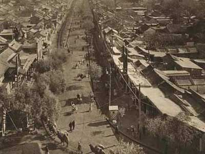

(2006-10-24 12:45:16)
【韶山映山红】桃花：】
】
最近忙着和孔二爷闹，满博客都是孔二爷，前两天耍了一下鲁超女活跃一下气氛，今天想继续说说这“教你炒股票”系列。总不能整天都是孔二爷，也要照顾一下孔方兄，都是姓孔的，一碗水要端平。【韶山映山红】前面连续发“《论语》详解：给所有曲解孔子的人”，到12篇了。还跟挺鲁迅的网友约架，“耍了一下鲁超女”。缠师早期像个好斗的大公鸡。】
股票上永远不缺英雄，更永远不缺死去的英雄。【韶山映山红】炒股的目标是挣钱。想当英雄，就要像个英雄那样去做英雄，当然就会偏离目标，然后成为死去的英雄。】
最近的英雄们都又在吹投资，但投资这内裤永远掩盖不了股票扒光后赤裸裸的投机。【韶山映山红】挣红利是投资，挣差价是投机。所以股票市场的本质就是投机。其他说得再好听，也都是手段。】
阴符云：“天性，人也；人心，机也；立天之道以定人也。天发杀机，斗转星移；地发杀机，龙蛇起陆；人发杀机，天地反覆；天人合发，万化定基。”【韶山映山红】原文出自《黄帝阴符经》，作者据说为黄帝轩辕氏，但也有人说是后人伪托的。这段话选自其中的“上篇”，论述天人关系的。 上天的运行规律就是人道，人道也就是仁，天地的场能性质，能够通过人的行为表现出来；而人的心性，是行为的关键。因此，要站在天道的角度，根据他内心所秉承的天地场能性质来确定某个人的品质和量级。（人不是独立的，是天地时空点的产物。） 天地之间的运行，有阴就有阳，有生就有杀，有正常就有反常。黄天有变，就会北斗翻转星辰错移；后土有变，就会飞龙大蛇飞腾穿梭；而人共聚天地之气，一旦有变，就会翻天覆地；而当这个变化合乎天道之理时，天时和人事能够一起运动造化，那么就是中和中庸之道，是奠定一切事物孕育发展的基础了。】
不投这个机，又如何夺天地之造化？【韶山映山红】桃花：（人力要配合天时地利才能夺天地之造化）】股票市场也是一样的。【韶山映山红】桃花：（投机市场投的就是“天时地利人和”之机，三者共振才能有巨大收益。所谓天时地利人和即：大势大盘、基本面之天时，个股走势之地利，个人操作之人和，三者缺一不可；缺少天时：不会有形成大行情的基础。例如：前2年如果没有天气配合就不会有豆粕的大牛市，没有经济衰退，商品期货也不可能有多年的熊市行情；缺少地利：即盘面走势不配合，市场达不到萌动标准，没有入场信号也是不行；缺少人和：再好的行情，没有执行力配合，同样枉然。）】
【韶山映山红】静姐06-01】
对于本ID来说，这股票市场就如同提款机，时机到了，就去提款，时机不到，就让他搁在那。【韶山映山红】股票市场这个提款机是应运而生的，不随人的心愿而行，要根据“时机”而动。】 【韶山映山红】静姐06-02】
市场就如同男人，整天管他就会犯贱，就会咬你。所以男人不能经常搞，这市场也一样，必须耐心等待他的骚动，他不骚动，是不能搞的。【韶山映山红】桃花：（等待市场达到萌动标准）】 【韶山映山红】静姐06-03】本ID曾写帖子“G股是G点，大牛不用套！”，连G点【韶山映山红】桃花：（市场热点）】都不明白，是没资格谈论股票的。 【韶山映山红】静姐06-04】
如同要找到男人的G点，就要对这男人充分了解，要找到这市场的G点，其道理是一样的。但就像光知道男人有G点还是不能乱搞，首先要了解他是干净的，是安全的，否则高潮还没有就翘了，那不麻烦大了？这市场也是一样的，不是什么机会、G点都要搞的，【韶山映山红】桃花：（如ST股票，如小级别的逆势抢反弹，高位追涨买入，都是不安全的机会）】 【韶山映山红】静姐06-05】
首先的前提要安全，要像去银行提款一样安全。就像又有G点又干净的男人才值得搞，市场上也只有这样又安全又能G点的机会，才值得投机。【韶山映山红】我们想要收益，市场想要我们的本金。所以安全永远是第一位的。】
【韶山映山红】桃花：（有题材又处在大级别买点上的股票）】
就像四月份时本ID在五粮液、包钢认购权证上的布局。
【韶山映山红】030002五粮YGC1。认购权证。当时的日线图和后来完整的日线图。】
【韶山映山红】038004五粮JTP1。认沽权证。当时的日线图和后来完整的日线图。】
【韶山映山红】580002包钢JTB1。认购权证。当时的日线图和后来完整的日线图。】
【韶山映山红】580995包钢JTP1。认沽权证。当时的日线图和后来完整的日线图。】
为什么选择他们而不是其他，道理很简单，因为他们既有认购又有认沽，而对于企业来说，除非行情特别不好，否则是不会让认沽兑现的，因为不兑现，这就是一个空头支票，而兑现是要掏真金白银的。因此，对既有认购又有认沽的认购权证来说，认沽和认购的行权价之间的差价，就是认购权证最安全的底线。【韶山映山红】认沽，顾名思义就是在约定的未来日期出售约定的标的物。 认沽是和认购对立的一个概念。在期权交易中会常使用。比如认沽权证，就是权证持有人在约定的日期按约定的价格出售对应的标的证券给权证创设方的一种权证。】
对于五粮液、包钢认购权证，这个底线就分别是1.02和0.43元。【韶山映山红】五粮认沽行权价格7.89元，认购行权价格6.87元，差价1.02元。包钢认沽行权价格2.37元，认购行权价格1.94元，差价0.43元。】
【韶山映山红】580995包钢JTP1认沽权证，580002包钢JTB1认购权证。
存续期为2006年3月31日至2007年3月30日，共计365天。最后一个交易日为2007年3月23日（星期五），从2007 年3月26日（星期一）起停止交易。行权期限为5天，为2007年3月26日--2007年3月30日期间5个交易日。
580002包钢JTB1认购权证经分红除息调整后的行权价格为1.94元。投资者每持有一份认购权证，有权在2007年3月26日--2007年3月30日期间5个交易日以1.94元的价格向包钢集团购买一股包钢股份股票，成功行权获得的股份在次交易日可上市交易。
580995包钢JTP1认沽权证经分红除息调整后的行权价格为2.37元。投资者每持有一份"包钢JTP1"认沽权证，有权在2007年3月26日--2007年3月30日期间5个交易日以2.37元的价格向包钢集团卖出一股包钢股份股票，成功行权获得的资金在次交易日可使用。
】
【韶山映山红】038004五粮JTP1认沽权证。030002五粮YGC1认购权证。】
而本ID当时分别在1元多和4毛多吃他们，是不是和去银行提款一样安全？
【韶山映山红】000858五粮液2006年4月的日K线图。】
【韶山映山红】030002五粮YGC1认购权证2006年4月的日K线图。五粮认沽行权价格7.89元，认购行权价格6.87元，差价1.02元。】
【韶山映山红】600010包钢股份2006年4月的日K线图。】
【韶山映山红】580002包钢JTB1认购权证2006年4月的日K线图。包钢认沽行权价格2.37元，认购行权价格1.94元，差价0.43元。】
唯一遗憾的是，他们的盘子都太小，属于小男人的类型，容纳不了太大的资金。小男人，没什么劲；小盘的股票，也一样。【韶山映山红】030002五粮YGC1认购权证2006年4月成交额147.9亿元。580002包钢JTB1认购权证2006年4月成交额82亿元。】
【韶山映山红】静姐06-06】
【韶山映山红】深市权证简称命名规则：
深市权证简称是六位：XYBbKs。其中：XY为标的证券的两汉字简称；Bb为两个拼音字母的发行人编码；K为权证类别，其中：C—认购权证；P—认沽权证；s为同一发行人对同一标的证券发行权证的发行批次，取值为[0,9]，[A,Z]，[a,z]。例:国信证券基于万科A发行的认购权证的简称可能为“万科GXC1”。
权证代码是‘03’开头的六位数字，认购权证代码区间（030000，032999），认沽权证代码区间（038000，039999）。】
【韶山映山红】沪市权证简称命名规则：
沪市权证简称一般采用8个字位(4个汉字)，第1至第4个字位用汉字、拼音或数字表示标的证券，第5个至第6个字位用两个大写字母表示发行人，第7字位用一个字母B或P表示认购或认沽，第8个字位用一个数字或字母表示以标的证券发行的第几只权证，当超过9只时用A到Z表示第10只至第35只。
例如:“宝钢JTB1”中，“宝钢”表示该权证的标的证券为宝钢股份，“JT”表示该权证的发行人是宝钢集团，“B”表示该权证是认购权证，“1”表示该权证是以宝钢股份为标的证券的第一只权证。
上海以B表示购，P表示沽。JT就是集团发的，HX是（万华）华信，CT（上海）城投，依次类推PG是攀钢的简称，HR是华润，CM是招商局集团符号。
权证代码是‘580’开头的六位数字，认购权证代码区间（580000，580099），认沽权证代码区间（580900，580999）。】
投机不是瞎搞，是要清清楚楚地搞。要清清楚楚，就要对市场充分地理解，要明白其道道。【韶山映山红】桃花：（市场内在的运行规律）】本ID曾发明了一个口号在私下流传，就是“像搞男人一样搞股票，像做爱一样做股票。”【韶山映山红】桃花：（建仓、洗盘、拉升、出货）】不明白这，没资格谈论股票。关于这个话题，今天就到这，有时间、有心情，继续。【韶山映山红】核心就一条：搞安全能搞的。】
（待续）
【韶山映山红】桃花：
附录
权证简介：
认购权证是股票衍生性金融商品，发行人发行一定数量、特定条件的有价证券，投资者付出权利金持有该权证后，有权在某一特定期间（美式权证）或特定时点（欧式权证），按一定的履约价格，向发行人买进一定数量之标的股票.
认沽权证即认售权证，就是看跌期权，具体地说，就是在行权的日子，持有认沽权证的投资者可以按照约定的价格卖出相应的股票给上市公司。
认购权证持有人有权按约定价格在特定期限内或到期日向发行人买入标的证券，认沽权证持有人则有权卖出标的证券。
认购权证的. 价值随相关资产价格上升而上升，认沽权证则随相关资产价格下降而上升。
】
【韶山映山红】南无月光如来注：
权证的好处在于：T+0的交易，当天可以进出。对于技术好的，既可超短线，又可以根据30分或日线走势进行交易。完全不会造成如中工国际上市那一天涨得再多，当天不能退出的情形。
当然一切取决于你的技术。
但股指期货推出后，权证可能不再吃香了，最近几年的认购权证到期时无一达到行权价位，就是明证。
从第6章看，缠师尚未提及缠论这个东东，也许此时还没有把缠论全面写出的意思。
http://blog.sina.com.cn/s/blog_60c36c130100hz4a.html 】
这个算一个调剂，不能都是说《论语》的，不能太“同”了。
2006-10-24 12:51
缠中说禅
[匿名] 6954k 2006-10-24 17:25:39
问一个“调剂”的问题，咱也调剂调剂：男G点在哪儿里？
=========
你没手？实践是检验真理的唯一标准。自己检验去！
2006-10-24 19:36
缠中说禅
[匿名] 数字老怪 2006-10-24 20:32:23
佩服。好文章。我都不好意思写字咧。阴符没你读的好。惭愧啊。
=========
过谦了。
2006-10-24 21:14
龙游苍昊
学习过了.
总结:
1\天时是事情成功的第一要素.投资的时机到了,若不介入是笨蛋,没到时机而介入更是笨蛋.
2\资金安全是投机的基础.
3\介入的股票应当有看得眼的容貌(基本面),有强壮的体魄(业绩良好),浪漫并多个G点(题材出众).
4\别在扫黄的时候去搞.HOHO~
2007-4-26 13:38
[匿名] 小马 2007-05-26 08:16:04
怎么感觉必带色,搞什么玩意,本来好好的论断,非要搞色的， 哈哈
--------
楼上批判色情的，都是你们自己色情，用G点，男上位女上位讲股票，很好玩，很贴切，你们是来学股票的，不是来看房中术的，自己不专心股票的理论，总朝色的想，可能还骚动不止，都是你们自己意淫自淫，看你们那点出息。
中枢理论没多难学，就是这前几课，可以说是大战略，一辈子都要反复来体会理解的，体会这些脑子都不够用，还有功夫去YY，真有你们的。
2007-9-14 17:39
缠中戏婵
“像搞男人一样搞股票，像做爱一样做股票。”
大家不能光记住上面那句就去干啊,会死人的!
首先要安全,其次要有G点!
1\不是什么机会、G点都要搞的，首先的前提要安全，要像去银行提款一样安全。就像又有G点又干净的男人才值得搞，市场上也只有这样又安全又能G点的机会，才值得投机。
2\市场就如同男人，整天管他就会犯贱，就会咬你。所以男人不能经常搞，这市场也一样，必须耐心等待他的骚动，他不骚动，是不能搞的。
同意石猴的看法.前几篇是缠论的核心,是战略,大本大源不把握住,战术学的越精,迟早要栽跟头的.
2007-9-30 15:26
(2006-10-25 12:13:28)

《论语》详解：给所有曲解孔子的人（13）
子曰：有教无类。
详解：
“无类”，就是“不相”，这一章，就是君子谋“圣人之道”所必须坚持的“不相”原则在上层建筑领域的一个具体化表述。这里的关键在“教”。“教”，不是平声，而是去声，在古代具有如下含义：教育、政令、法令、政教、教令、宗旨、学说或学派、宗教等。
用现代术语，这个“教”包括了整个上层建筑领域。“有教无类”，不只是通常所理解的只是从教育的角度讲，而是指行“圣人之道”，在上层建筑领域、当然也包括一般所理解的教育，但按现代的术语，还包括法律、舆论、行政、宗教、学术、艺术等等一切的上层建筑领域，相应地就要行“不相”之谋。只有这样理解，才算真明白何谓“有教无类”。
【韶山映山红】高考刚过：字都认识，但你真的知道“有教无类”是什么意思吗？
https://zhuanlan.zhihu.com/p/27586904】
子曰：士志於道，而耻恶衣恶食者，未足与议也！
详解：“耻恶衣恶食者”，就是“相”，当然就“未足与议也！”不过这里有一个问题，就是“耻恶衣恶食者”究竟指谁？朱熹《论语集注》里，就把“志於道”之士和“耻恶衣恶食者”的人当成同一个人了。如果真这样解释，那这个“士”字就没必要了，完全可以变成“志於道而耻恶衣恶食者，未足与议也！”。
正确的解释应该是：志於道之士“耻”恶衣恶食者，这个“恶衣恶食者”主要是指别人，就是“恶衣恶食”的人，当然也可以指“志於道之士”自己，因为如果他自己就是“恶衣恶食”的人，他自己也看自己不顺眼，也“耻”之，也是可以的。
这样，这句话的意思就很清楚了，如果一个人，立志要行“圣人之道”，却把人分为“好衣好食”、“恶衣恶食”两类人，也就是以贫富划分人，而选择以“恶衣恶食”也就是穷人为耻，远离他们，那这种人谈论的“圣人之道”只是羊头狗肉的勾当。为什么？因为他不能“不相”。
子曰：贤哉，回也！一箪食，一瓢饮，在陋巷，人不堪其忧，回也不改其乐。贤哉，回也！
详解：本章是紧接着上一章的意思来的，“一箪食，一瓢饮，在陋巷”，这是典型的“恶衣恶食”了，“人不堪其忧”，这里的“人”就是“人不知”的人，就是不能行“圣人之道”的人，他们对这种情况不能忍受，但“回”，颜回，孔子最出名的学生，也是孔子心目中立志行“圣人之道”的一个典型，他“不改其乐”，孔子因此给“贤哉，回也！”的赞誉，而且是一句话前后两次。为什么？因此颜回能“不相”，是真立志行“圣人之道”。
必须强调的是，颜回这个“安贫乐道”的典型，并不是故意去“贫”，并不是故意要“恶衣恶食”，也不是如某个历史时期里有的所谓“宁要社会主义的草、不要资本主义的苗”，或者如某些宗教所教唆的故意去苦行，这些都是严重地“相”了，这些都是和君子谋“圣人之道”所必须坚持的“不相”原则背道而驰的。
（待续）
严禁抄袭，违者必究
该简就简，该繁就繁，所以今天来三章。
2006-10-25 12:20
[匿名] 狂歌 2006-10-25 16:19:47
关于"大同"之谬,这么简单的道理,这么清晰的逻辑,我想就不必再争了.
照此推下去,恐怕要归到老子的道法自然,无为而治了.原来老孔出自老子门下,还深得其衣钵,在下实在孤陋寡闻之至.
以后有时间会祥解"如“天地”般，而不是让花只有一种颜色、鸟只有一种叫声。",就更可以看出这种谬误了.
==============
上面公子白的理解是正确的。“同而大同”是独裁、专制的代名词，真正的“大同”是“不同而大同”，要“不同”，首先就要成就其“大”。无其“大”，就无其“不同”。无其“不同”，就无其“大同”。
2006-10-25 16:42
(2006-10-26 12:01:32)

《论语》详解：给所有曲解孔子的人（14）
子曰：贫而无怨难；富而无骄易。
详解：上面两章都说到面对“贫富”的“不相”问题，不过都是从“安贫”而“乐道”这个角度说的。但并不是说贫穷就是好的，富就是不好的。“贫富”都是“相”，对于行“圣人之道”的君子来说，对于“贫富”只存在一个如何面对的问题，而不存在好和不好的问题。“贫”和“富”，都不影响行“圣人之道”，“圣人之道”是大道，不是某类人的专利，无论穷人还是富人，一律平等，没有哪类人有优先权。
“贫”和“富”，在任何现实社会中都会存在的，而且关系到每一个人，特别在财富分配不公的社会，这问题就更加突出。但这里相应的理解，不能光局限在财富上，例如学识上也有“贫富”问题，权力、权利分配上同样有类似的问题。任何一个现实的人构成的现实中的社会，都不可能在所有方面绝对的平等，只要不平等，必然面临着“贫富”问题，无论是在财富、学识，还是权力、权利等方面，这个问题都是无可逃避的。
但这一章，自古以来都把其中的“难”当成平声，相应的断句其实就成了“贫而无怨，难；富而无骄，易。”例如，朱熹等人就是这样把“难”当成“难易”的“难”了，这句话的意思就成了“贫穷而不怨恨是困难的，富贵而不骄横是容易的。”而如果这是人之常情，那这话就成了废话，但事实上，这样的解释连废话都算不上，只能是瞎话。自古以来的现实往往是穷人经常乐呵呵，富人却骄横无理，要把穷人赶尽杀绝。这章，自古以来的断句、解释都是错误的。
正确的断句应该是“贫而无怨难；富而无骄易。”这里的关键在于“难”，不是平声，而“易”也不是“容易”的意思。不过还是先从“怨”说起，程度浅的“埋怨”、程度深的“怨恨”，被“怨”的就成了“仇人”了。这个“怨”，在古代就包含了“埋怨、怨恨、仇人”等意思。而因“怨”就会生“难”。何谓“难”？“难”，去声，是“敌对、造反、灾难”的意思。因“怨”而有“仇”而“敌对”甚至“造反”，这不是“灾难”是什么？
“骄”，本义是“健壮”的意思。富人，自以为“健壮”，因此“骄傲”进而“傲慢”甚至“骄横”最后达到“强烈”的程度。这个“骄”，在古代就包含了“健壮、骄傲、傲慢、骄横、强烈”等意思。“易”，不是“容易”的意思，其本义是“赐给”的意思。富人，自以为自己的“富”是上天“赐给”的或者是自己的天赋、努力“交换”来的，因而产生“轻视、怠慢”，最终对立在社会上“蔓延”。“赐给、交换、轻视、怠慢、蔓延”，都包含在“易”里。
君子行“圣人之道”，就是要把“人不知”的世界变成“人不愠”的世界。而“人不愠”的前提是“人不相”，在具体的社会存在中，包括财富、学识、权力、权利等方面的广义“贫富”，是社会中最大的“相”。而这个贫富之“相”在任何“人不知”的社会中，都体现为“贫而怨难；富而骄易。”君子行“圣人之道”，把“人不知”的世界变成“人不愠”的世界，首要面对的就是如何把这个“贫富”之“相”“不相”之，要让“贫而无怨难；富而无骄易。”这，就是面对“贫富”的“不相”之谋。
要让“贫而无怨难；富而无骄易。”不是让一个权威、教主等发一个倡议或来一段布道就可以完成的，更不是用强制或诱惑的手段把人改造成具有“贫而无怨难、富而无骄易。”的思想的新人来掩盖现实无法掩盖的“贫富”之“相”。而是在“贫富”存在的现实中，用各种现实的经济、政治、法律、文化等手段来实现“贫而无怨难、富而无骄易。”的“不相”。
对于《论语》、对于儒家来说，“不相”是“人不知”到“人不愠”的中间环节也是必经之路。“不相”是“相而不相”，不以“相”相之。首先不能否认“相”的存在，正因为有“相”的存在，才需要“不相”。例如，对于“贫富”之相来说，其存在是客观的，否认这种存在只能是掩耳盗铃、睁眼说瞎话，这不是“不相”，而是严重地“相”了。真正的“不相”，就是直面这“贫富”之相的存在，用在社会经济、政治、法律、文化等方面，不以“贫富”之相相之，进而对“贫富”之相“不相”之。
何谓社会经济、政治、法律、文化上对“贫富”的“不相”？就是采取公平、一视同仁之谋，“贫”或“富”都不是偏袒的理由。而“贫”或“富”之间也要“不相”，也要相互平等视之。对“为富不仁”的就要坚决打击，因为“为富不仁”者以“富”为相，所以就要对之“不相”，将其“富”者之相给去了；对“贫而自贱”者要“富之贵之”，因为“贫而自贱”者以“贫”为相，所以就要对之“不相”，将其“贫”者之相给去了；对“挟贫而贼”的坚决打击，因为“挟贫而贼”者以“贫”为相，所以就要对之“不相”，将其“贫”者之相给去了。
必须再次说明的，这里的“贫富”，不单单指财富上的，例如权力上的“贫富”，就有所谓的“官民”之别，政治地位的“贫富”就有所谓统治阶级与被统治阶级之分。必须在广义的“贫富”上最终成就“贫而无怨难；富而无骄易。”的“不相”，才能真正地“不相”。否则只能是“城头变换大王旗”，换汤不换药而矣。但这个问题涉及面太广，《论语》中有大量的章节涉及这个问题，将陆续展开讨论。
（待续）
严禁抄袭，违者必究
有人留言提到“不相”是一个佛学概念的问题，但“相”的去声用法，在佛法东来前早有了，现在还流行的“看相”之类的，大家都应该很熟悉了。把“不相”往佛学上扯，既不懂佛学的“无相”，更不懂儒学的“不相”，“不相”不是“无相”。站在佛学的角度，儒学所说都是世间法，非究竟之法。但对于世间法来说，儒学已经足够究竟了，所以本ID才会详解这论语。
2006-10-26 12:15
补充一句：请别用腐儒们对儒学、佛学的陈见来谈论儒学、佛学，真能对儒学、佛学透脱的，宋朝以来，罕见其人。否则，本ID也没必要在这里码字了。
2006-10-26 12:18
[匿名] 狂歌 2006-10-26 13:33:50
你好象漏掉了一个最重要的东西,即何谓"圣人之道".这本应该是文章最开始就应该说的,竟然到现在都不见影.现在能不能具体阐述一下?
=========
反复在说，你没看明白。
2006-10-26 15:05
[匿名] 路过 2006-10-26 14:40:57
听说他二大爷得势时，杀过一个叫少某某的人。
不知算不算“强行教化”
谢谢回答
===============
该杀之人不杀，乃乡愿。儒家从来不乡愿。例如“为富不仁”者、“暴君恶吏”等等。
2006-10-26 15:08
[匿名] 路过 2006-10-26 14:40:57
听说他二大爷得势时，杀过一个叫少某某的人。
不知算不算“强行教化”
谢谢回答
===============
该杀之人不杀，乃乡愿。儒家从来不乡愿。例如“为富不仁”者、“暴君恶吏”等等。岂有不杀之理？
2006-10-26 15:10
杀一“暴君恶吏”而救万亿者，大仁大勇也，真行“圣人之道”也。
2006-10-26 15:13
[匿名] 狂歌 2006-10-26 13:33:50
你好象漏掉了一个最重要的东西,即何谓"圣人之道".这本应该是文章最开始就应该说的,竟然到现在都不见影.现在能不能具体阐述一下?
=========
反复在说，请看仔细。
2006-10-26 15:25
[匿名] 窗外 2006-10-26 19:43:02
如果攻乎异端，斯害也已，是不是容易乡愿呢？如果不相为谋，怎么解决矛盾呢？请指教。。
===========
没有任何矛盾的地方，能“攻乎异端”的，只有政府、宗教团体等等有组织的机构。个人间的争论，就不算“攻乎异端”，乡愿是针对个人而言的。“不相”是对“相”的不相，是各种“相”可以平等地存在，达到“不同”，而不是当聋子、瞎子、故意看不到分歧。
2006-10-26 20:15
[匿名] 窗外 2006-10-26 20:56:22
谢谢！唯仁者能好人，能恶人，恶人就是对“相”的“不相”，应该是这个意思吧。。。另外，当团体中出现对立势力，争论应该是不能解决问题的，这时就会出现内斗，因为平等的存在是不可能的，对方的存在就是对自己价值的否认，这个算不算攻乎异端呢
=============
一个团体之内首先也要“不相”，这和国家的道理是一样的。如果一个团体是以凌驾在个人之上为前提的，这个团体只能归属于邪教范畴。至于其他问题，在以后的解释里都会涉及，就不详说了。
2006-10-26 22:16
[匿名] 纟纟纟纟 2006-10-27 11:50
正确的断句应该是“贫而无怨难；富而无骄易。”这里的关键在于“难”，不是平声，而“易”也不是“容易”的意思。不过还是先从“怨”说起，程度浅的“埋怨”、程度深的“怨恨”，被“怨”的就成了“仇人”了。这个“怨”，在古代就包含了“埋怨、怨恨、仇人”等意思。而因“怨”就会生“难”。何谓“难”？“难”，去声，是“敌对、造反、灾难”的意思。因“怨”而有“仇”而“敌对”甚至“造反”，这不是“灾难”是什么？
“骄”，本义是“健壮”的意思。富人，自以为“健壮”，因此“骄傲”进而“傲慢”甚至“骄横”最后达到“强烈”的程度。这个“骄”，在古代就包含了“健壮、骄傲、傲慢、骄横、强烈”等意思。“易”，不是“容易”的意思，其本义是“赐给”的意思。富人，自以为自己的“富”是上天“赐给”的或者是自己的天赋、努力“交换”来的，因而产生“轻视、怠慢”，最终对立在社会上“蔓延”。“赐给、交换、轻视、怠慢、蔓延”，都包含在“易”里。
上面两段，到底何意，不得而知！！！不如不写！！！！！！！
==============
没看明白？在解释“怨难”“骄易”，前人的解释都不对，所以必须详细说明。
2006-10-27 12:21
[匿名] 1051k 2006-10-26 15:34
子曰：贫而无怨难；富而无骄易。
这句话要是放在今天的环境里来看，应该是这样的：
贫而无怨难，富而无骄也难。
为什么呢？
不为什么，这是人之常情嘛，是人都能感觉得到。
那为什么在孔子的年代，人们会感觉到“富而无骄易”呢？难道那个年代的富人官人都是圣人君子，从来都不骄横跋扈吗？显然不是，富人官人骄横跋扈的历史事实比比皆是，根本就不用怀疑。
那么，孔子说这话到底是啥意思呢？
其实，孔子这句话的道理说出来非常简单，你若偏要上纲上线地去理解，就把简单的问题搞复杂了。
答案应该是这样的：
这两句话在语法上其实是一种比较关系，孔子想说的意思是，相对于“贫而无怨”而言，“富而无骄”是容易做到的。
理解的关键是这句话里面暗藏的比较关系，掌握了这一点，则一通百通了。
结论：
文言文（古文）语言科学性、表达准确性、逻辑性是不足的，相当于人类婴儿时期的幼稚语言，常常指代不清，逻辑不明，语义混乱。这也是为什么我们今天对古文产生歧义的根本原因之所在。
因此，废除文言文、提倡白话文是汉语语言发展的需要，是汉语迈向成熟的重要一步。
=============================
[匿名] 狂歌 2006-10-27 11:48
说得对,博主解论语可以当做古文弊端的一个最好证明。
再重伸一遍，语言是思想的载体，不是你想怎么捏就怎么捏。玩文字游戏是可笑的。博主最近的文章大失水准，和以前判若两人，令在下深感不解。
=============
在写出能和《论语》《老子》《庄子》《易经》《孙子》等相比的东西之前，白话文没资格和文言文比！
2006-10-27 12:25
[匿名] Hyson 2006-10-27 02:19:05
偶然闯进，一口气读完，佩服之至。如此见解，确实难得一见。对比自己一些对文字的理解，实在汗颜。见到你写的这些，受益非浅。
也顺便说一句：儒家求不同而大同，你深得其中之味，又何必在意那些你觉得错误的看法呢？
=========
过奖了。对错误的看法，本ID并不在意。纠正他们并不是为了本ID自己，而是为了世道人心，为此，是不能乡愿的。
2006-10-27 12:27
(2006-10-27 12:09:54)
《论语》详解：给所有曲解孔子的人（15）
子贡曰：“贫而无谄，富而无骄，何如？”
子曰：“可也；未若贫而乐，富而好礼者也。”
详解：上一章说明了必须通过对“贫富”的“不相”，达到“贫而无怨难；富而无骄易。”这样一个“人不相”的社会。所谓“人不相”，就是“人不知”到“人不愠”的中间环节和必经过程，就是社会中各种阶级、阶层等“相”都能平等地存在，不会出现某种类型的“相”以其“相”为相，从而一“相”独大，凌驾于其他各“相”之上。一旦出现一“相”独大，以“相”为相的，就要对之“不相”，回复到“人不相”的众相平等。而只有“不相”，才能“不同”；只有能同时容纳各种的“不同”，才能成就其“大”，才能有所谓的“大同”。
但这种“人不相”的社会只是一个中间环节，行“圣人之道”，最终要实现的是“人不愠”的大同。正因为这样，所以接着就有了这一章。子贡，孔子的学生，以为“人不相”就是最高的境界，所以问到：“贫而无谄，富而无骄，何如？”这个“贫而无谄，富而无骄”就是上一章所说的“贫而无怨难；富而无骄易。”也就是“人不相”的社会状态。但孔子给予的回答是：“可也；未若贫而乐，富而好礼者也。”也就是说，这种“贫而无谄，富而无骄”的“人不相”社会是可以的，已经不错了，但还不是最理想的状态，对于儒家来说，最理想的社会就是“贫而乐，富而好礼”的“人不愠”的大同社会。
由于受通常观念的干扰，一般人都习惯于只在财富的角度使用“贫富”，但在上一章的解释里已经反复强调，《论语》里的“贫富”不单单指财富方面，只要人与人之间能产生差异的地方，无论是学识、智力、财富，还是政治地位、社会角色等等，都会出现“贫富”。而“人不愠”的大同社会并不是要消灭一切差异的绝对平均的社会，因为这种可能性根本不存在。人与人的差异，是必然存在的，探讨在一切方面绝对平均的社会，只能是乌托邦，毫无意义。而儒家最高明的地方就在于，根本不去假设这种毫无意义的社会存在，而是在承认人与人差异的必然性前提下，探讨可能出现的理想社会，其结论就是“人不愠”的大同社会。
用“贫富”对社会形态进行分类，就可以得出三种基本的社会形态：“贫而谄，富而骄”、“贫而无谄，富而无骄”、“贫而乐，富而好礼”，分别对应着“人不知”、“人不相”、“人不愠”的社会。而行“圣人之道”，就是要把“人不知”的社会，通过“人不相”的中间环节，最终达到“人不愠”的大同社会。《论语》对社会形态的总体把握，是十分清楚的，只是自古以来，腐儒被劣识所困，而无知之辈被妖人蛊惑，胡诌什么“打倒孔家店”的昏话。这种人，连孔子、《论语》、儒家究竟说了些什么都没搞明白，就唾天以自污，岂能不千古遗臭？
“谄”就是“奉承”，不光指语言，还包括一切行为。为什么要“奉承”？就因为是弱者而有所求。在“贫而谄，富而骄”的“人不知”社会，这种“贫而谄”无所不在。例如，下级和上级，打工和老板，鸭子和嫖鸭子的，（男）研究生和（女）教授，FANS对偶像，小国对大国等等。至于“富而骄”就更不用说了，“骄”，因强大而骄横。像美国，就是国家“富而骄”的典型；至于人的例子，随处可见。“贫而谄”不得，最终就会“贫而怨难”，因“怨”有“仇”而“敌对”甚至“造反”，但“造反”成功的马上又成为“富而骄”，又有新的“贫而谄”，结果不断循环，都逃不出这个“贫而谄，富而骄”的“人不知”社会。
《论语》、儒家看穿了这个“贫而谄，富而骄”的恶性循环，知道在这里打圈圈是没用的，而要打破这个恶性循环的办法，只有通过“人不相”而达到“人不愠”，最终摆脱“贫而谄，富而骄”的“人不知”的恶性循环。要实现这个打破，首先就要实现“贫而无谄，富而无骄”的“人不相”，为此，就必须要实现对“贫富”之相的“不相”，达到“人不相”。为什么实现对“贫富”之相的“不相”，就能实现“人不相”？是因为只要存在人与人的地方，就必然会出现各种方面的“贫富”之相，消灭这种“贫富”之相、将之抹平是不可能的，唯一办法就是使之“不相”，使得各种“贫富”之相能平等地存在，实现其“不同”，容纳各种“不同”而成其大，最终成就其“大同”。儒家、《论语》认为，这种“大同社会”的实现是当下的，是可以现世实现的，这种看法是由儒家的入世以及现世精神所决定的。
“贫而乐，富而好礼”，乐，yue，歌舞升平，连“贫”者弱者都能歌舞升平，而只有“不愠”才可能歌舞升平，连“贫”者都能“不愠”，这才是真正的“人不愠”，这才是“大同”。这里，“礼乐”并举，并不是说“礼”归富者，“乐”归贫者，而是“互文”的修辞手法，无论贫富，都“乐”且好“礼”。为什么“礼乐”并举？“乐”是指个体的，“礼”是人与人之间的，人人歌舞升平，相互又以礼相待，这才可能“人不愠”。另外，人人歌舞升平，还指代人人有好的修养，都是具有高度修养的君子。所谓“修身、齐家、平天下”，其人身不修，又何来“人不愠”的大同“天下平”？
（待续）
严禁抄袭，违者必究
请别用腐儒们对儒学、佛学的陈见来谈论儒学、佛学，真能对儒学、佛学透脱的，宋朝以来，罕见其人。本ID所写皆发前人所未发，前无古人，也不必古人，所以也不必用古人来和本ID说事儿。
2006-10-27 12:16
[匿名] 非奴隶昆仑 2006-10-27 13:06:26
虽然楼主的解释很新，但不同意楼主的解释，孔子有那么厉害？楼主不要把自己的思想塞给孔子。
========
是不是孔子的思想，唯一可以佐证的就是《论语》这文本，这方面的依据，在解释里都分析到了，是否合理，自己去判断。本ID坚持就文本论观点，不能因为古人的错解就可以将错就错。
2006-10-27 16:34
[匿名] 白丁 2006-10-27 14:50
孔子的修养当然是圣人的修养，孔子的话当然厉害！
但是，孔子的伟大厉害确实因为他讲了《论语》，但是不厉害的地方就是没有实现“圣人之道”。
行“圣人之道”，首先要理解“圣人思想”，今天数女真正理解了，也算是历史罕见的“牛妹”了！我希望她能在日后行“圣人之道”，这样，她就彻底的真实的伟大和“牛妹”了！
你说呢，牛女？
=========
[匿名] 白丁 2006-10-27 15:00:15
本白丁不是夸数女，而是支持数女这种正义大德行为。
向来我们都是在青楼无理取闹，寻欢作乐，今天终于看到她有“改邪归正”之意了，呵呵。
所以要支持啊！！！
=========
无邪可改，无正可归，不过还是要谢谢支持。
2006-10-27 16:35
[匿名] sdf 2006-10-28 13:35:33
楼主说什么“不相”“不愠”就能世界歌舞升平，马克思《资本论》第一卷在引用牧师调查煤矿工人报告说：要他们教化，上帝也没有办法。楼主捍卫马克思，说马克思逻辑是现实逻辑，在这里，马克思的现实逻辑到哪里去了？楼主《论语详解》二、三篇里说：闻、见、学、行。如果楼主真的是做到自己所说的“闻见学行”，就不会犯这种错误，认为：马克思是现实逻辑。马克思认为：贫穷是万恶之源。这里，又是圣人逻辑，认为：“相”和“愠”是万恶之因。楼主到底是马克思之道还是圣人之道？这是两个不相容的道，一个是就算是楼主说的：现实逻辑之道，一个是圣人教条唯心之道。也可能楼主另有一道，就是“我”之道：我说“这”就是“这”，“那”就是“那”，是“这”是“那”，看我心情和感情。
楼主思想乱矣，首见楼主提出“闻见学行”，却不见楼主“闻见学行”，孔子说圣人，孔子说：我做不到。楼主到是与孔子一脉相承，说“闻见学行”，做不到“闻见学行”。
中国人很喜欢神话，谁能谁会说神话，谁就是神人圣人。说敝者，自敝不自知，还牛屄哄哄：数女新天地。笑，不笑不足以为乐；哄，不哄不足以知羞。
============
理解错误。“不愠”是结果，不是原因。另外，你也没理解“不相”，杀尽“暴君贪官”也是“不相”的一种。
2006-10-28 14:16
另外，必须再次指出，“贫富”不单单指财富方面，斯大林主义里，官僚就是“富”者，斯大林主义也是一种“人不知”，也是“贫而谄，富而骄”。
2006-10-28 14:19
(2006-10-28 13:54:19)
写了一周的孔二爷，怎么都该歇一天，换个话题。有人在本ID音乐播客留言，大意是问为什么本ID不爱搭理某位死于同志的俄罗斯同志？为什么本ID不爱搭理这被叫“老柴”的、在一般音乐爱好者中广泛被爱被好的俄罗斯同志？鉴于这位老柴同志的“超女”级别声誉，本ID今天就组织一次他的音乐会让柴粉们消消气。
说实在，本ID对他的音乐确实没什么好感。并不是因为他是所谓的同志，最后还因同志而死。更不是说，喜欢这俄罗斯同志音乐的人都被本ID视为同志而不耻。音乐界的同志实在太多了，简直到了触目惊心的地步。如果本ID因其同志就不喜欢其音乐，那至少如下同志的音乐就要被封杀：贝多芬、舒伯特、马勒。贝多芬还不仅仅是同志那么简单，其涉及乱伦的、对其侄子的不伦行为，估计会让李银河等特别兴奋。而他这柴可夫斯基名字，也忒逗了点儿，“可夫”且“基”，真应了中国人“有中错状元，没改错名字”的老话。
但音乐就是音乐，音乐家只用音乐说话，音乐家的墓碑是用音乐垒成的。即使贝多芬刚强奸完他的侄子，回头就去写他的交响乐、弥撒曲。贝多芬的音乐依然贝多芬，其中只有伟大的心灵和伟大的音乐，而不是叔侄之间乱伦的呻吟、叫床。相比之下，这位俄罗斯同志的行为，简直是小事一桩，值得他为此而死吗？值得他为此而内心挣扎吗？这种软弱的人写出来的音乐，只能是草间虫鸣，哪能像贝多芬那样，乱伦也乱得气势磅礴、傲视群雄。所以贝多芬是贝多芬，俄罗斯同志只能是俄罗斯同志，两者是不能比的。
同志、乱伦这点儿破事就不继续了。今天播放的是这位俄罗斯同志的三部作品，简介如下：
1812年序曲
一部被折腾过无数遍的作品，有人还要弄得枪炮齐鸣才过瘾。
而除了法国人，为了其中被耍弄的《马赛曲》
任何对这作品有感觉的，其音乐IQ都应被大大地质疑。
比起他的同胞老萧的《列宁格勒交响乐》，
老柴同志这玩意真只能是玩意了。
降B大调第一钢琴协奏曲
又一部被无数次折腾的作品，
大概，老柴同志也真爱被别人折腾。
比起那序曲，这协奏曲至少还对得起“音乐”二字。
这，也算他最好的作品之一了。
但比起其后辈小拉，总是缺了点什么。
老柴同志，还是比较适合写些如《天鹅湖》般的拼盘，
用甜得发腻的旋律去勾引无知老妇和无脑少男。
f小调第四交响乐
并非他最出色的交响乐。
他最出色、也最出名的是第六的《悲怆》。
所谓人之将死，其言也善。
怎么也是老柴同志呀。
在那里，他最终放下了一切的伪装，
写出了其内心所能承受的东西。
不过那东西太影响各位周末轻松愉快的心情了。
为了不给大伙添堵，还是换了这老四来玩。
老四，他搞得第二好的交响乐，
里面还是有太多《1812》类型的东西。
老柴同志为了掩盖自己的心灵，为了逃避自己的心灵，
总爱写些徒有其表的东西。
那也没办法了，谁让他同志着又耻于同志最终死于同志？
一生都在逃避自己的人，其音乐也是难以音乐的。
请把其他背景音乐关闭，开始听听这寒号鸟如何哀鸣吧：
就事论事，请柴粉们不要乱跳。
2006-10-28 14:42
[匿名] MM 2006-10-28 18:16:34
欣赏了。但好象没有最后一个作品？
---------------
对不起，刚才上传有点问题，现在解决了。
2006-10-28 19:30
[匿名] 山里人 2006-10-28 18:58:42
想宣扬什么？搞艺术的就可以乱搞？
========
只是说历史典故，不是搞艺术的就可以乱搞，你说现在谁不可以乱搞？
2006-10-28 19:39
公告
对一次笔墨游戏按暂停键：
这里的人都知道本ID因为步孔庆东大叔的一个七律而引发一次笔墨游戏。最近，这大叔第三次给本ID一个评价，引用如下：
“缠中说禅《论语》详解：给所有曲解孔子的人”皆发前人所未发，前无古人，也不必古人。“
====================
孔庆东 于2006/10/28 00:42:19 回复到:
虽然有广告之嫌，但确实解说得不错，下了功夫。
既然都这样了，拳头不打好脸，本ID当然要按暂停键，但只是暂停键，不是终止键，这世界上的事情不能太绝对，没什么是一定要终止的，这是必须明确的。
2006-10-29 12:27
作者：flowingriv 回复日期：2006-10-29 13:40:36
楼主这点真的不好，说音乐就说音乐，同志做的音乐难道也有同志气吗？同志的音乐好或者不好，或这都没有关系，死于同志也是楼主鄙视其音乐的理由吗？莫名其妙!
=================
你没看清楚这一句？
但音乐就是音乐，音乐家只用音乐说话，音乐家的墓碑是用音乐垒成的。
为什么贝多芬乱伦，本ID不鄙视他？因为他的音乐伟大。如果那俄罗斯男人能写出贝多芬一样水平的音乐，本ID也不鄙视他。
2006-10-29 20:25
[匿名] 大胡子 2006-10-29 20:13:22
深有同感，老柴的东西确实让人感觉甜的发腻，用一个时髦点的词叫“Kitsch”，在我国有“肯次”、“庸俗”、“媚俗”、“畸趣”等不同译法，台湾有人译为“忌屎”，因为米兰·昆德拉曾说“Kitsch 是对大粪的绝对否定”（意指逃避现实）。
==============
音乐上有相同的感觉也是很难得的，特别是老柴，真是太多FANS了。
2006-10-29 20:26
作者：flowingriv 回复日期：2006-10-29 13:40:36
楼主这点真的不好，说音乐就说音乐，同志做的音乐难道也有同志气吗？同志的音乐好或者不好，或这都没有关系，死于同志也是楼主鄙视其音乐的理由吗？莫名其妙!
=================
你没看清楚这一句？
但音乐就是音乐，音乐家只用音乐说话，音乐家的墓碑是用音乐垒成的。
为什么贝多芬乱伦，本ID不鄙视他？因为他的音乐。如果那俄罗斯男人能写出贝多芬一样水平的音乐，本ID也不鄙视他。
2006-10-29 20:26
我都说
每晚都上这欣赏音乐会，还不用买票，感觉还行。
我发现楼主搞的颠峰对决只注重作曲家，什么时候能搞一场演奏家的对决？
比如：让Sarasate、Perlman、Mutter 死盖一出《流浪者之歌》。
2006-10-30 10:28
【韶山映山红】《遥远的救世主》“同一首《流浪者之歌》的曲子，以穆特与弗雷德里曼的小提琴相比较，穆特诠释的是悲凉、悲伤、悲戚，弗雷德里曼诠释的是悲愤、悲壮、悲怆，不一样，穆特多了点宫廷贵妇的哀怨，少了点吉普赛人流浪不屈的精神。”“海飞兹是伟大的小提琴大师，但是单就《流浪者之歌》这首曲子，他的诠释也不一定是最高境界。也许他太在乎技艺精湛了，反而染了一丝匠气，淡了一丝虔诚。以他们3人各自演奏的《流浪者之歌》相比较，我觉得穆特是心到手没到，海飞兹是手到心没到，只有弗雷德里曼是手到心到。”“心是愿望，神是境界，是文化、阅历和天赋的融汇。咱们都相信穆特想演奏好，但她的性别底色是上帝给她涂上去的，只要她不能超越上帝，她就抹不去性别底色的脂粉气。穆特的手，是一双女人的手。”】
(2006-10-29 12:10:24)
《论语》详解：给所有曲解孔子的人（16）
子曰：齐一变，至於鲁；鲁一变，至於道。
详解：这一章很奇怪，仿佛毫无来由。“齐”和“鲁”，俩诸侯国，怎么“齐一变，至於鲁；鲁一变，至於道。”地折腾两遍就和“圣人之道”搭上界了？其实，这一章是顺着上一章从“人不知”经“人不相”达“人不愠”的大道而来的。
说起“齐”，都知道是孔子时代的强国，齐桓公，春秋五霸之首，其以“霸术”而行终成“霸业”。“霸术”而“霸业”，是以人之“恶”为前提的：对内以法制民、对外以武制敌，强调的是以暴制暴、以力制力、以恶制恶。这种类型的国家，自古以来从来不缺，是“人不知”所必然导致的社会结构。这种类型的国家，在当代依然被视为最先进的、必须效仿的对象。而在儒家、《论语》看来，这种“齐式”国家，不过是“人不知”的衍生物。
“人不知”的世界，人之恶是一切行为的前提，在当代经济社会里，扒掉一切伪装，唯一的动力就是人之私欲，利益是经济社会里最高的准则，法律是为保障各种利益而存在的。但在儒家看来，恶只能引发恶，制恶以法只能是权宜之法，诱人以利只能生人以怨，只能使得“贫而谄，富而骄”的“人不知”状态愈发严重直至不可救药，然后玉石俱焚再死灰复燃地重新开始“人不知”所惯有的恶性循环。
为转化这种“人不知”的“贫而谄，富而骄”，要打破“贫而谄，富而骄”的恶性循环，就有了“齐一变，至於鲁”，企图通过改变以恶为前提的“霸术”而“霸业”的“齐式”国家模式，一变为“鲁式”国家模式。何谓“鲁式”国家？“鲁国”，在孔子时代是打着以“仁”以“德”治国的典型，号称传承着被孔子当成典范的周公之仁德。以“仁”以“德”治国，强调善的力量，对于一个习惯于以恶为前提的“人不知”世界是不可想象的，相比“齐式”国家模式，“鲁式”国家模式的出现是一种进步，所以才有“齐一变，至於鲁”的说法。
但在“人不知”的世界，以“善”为善，标榜其“善”，往往使得所谓的“善”成为伪善，成为另一种“恶”。而当时的“鲁国”，虽然打着“仁”“德”的旗号，但在孔子看来，这只能是假“仁”假“德”，不是儒家、《论语》所说的“仁”“德”。而当这种假“仁”假“德”成为一种新的意识形态，以此形成一个新的阶层后，“贫而谄，富而骄”的局面依然会出现。因此，这种“鲁式”国家模式并不能打破“贫而谄，富而骄”的恶性循环，这种“鲁式”国家模式依然只是“人不知”世界的一个变种。
要转化这种“人不知”的“贫而谄，富而骄”，要打破“贫而谄，富而骄”的恶性循环，靠“齐式”、“鲁式”招数都是没用的，必须要“鲁一变，至於道。”何谓“道”？就是从“人不知”经“人不相”达“人不愠”，最终成就圣人之道。“人不知”的世界，以“善”不生为相，因此要对之“不相”，去掉“善”不生之相，从而扬其善；“人不知”的世界，以“恶”不灭为相，因此要对之“不相”，去掉“恶”不灭之相，从而惩其恶。在“人不知”的世界，扬其善、惩其恶，就是“不相”其“贫富”诸相。只有这样，才可能达到“人不相”的“贫而无谄，富而无骄”。
要成就“人不相”的“贫而无谄，富而无骄”，不能如“齐式”模式那样光立其恶而惩其恶，也不能如“鲁式”模式那样光立其善而扬其善，必须善恶并举、文武并重，所谓“一阴一阳、文武之道”，这是儒家的一贯立场。只有这样，才能扬其善、惩其恶，“不相”其“贫富”诸相，打破得“贫而谄，富而骄”的恶性循环，达到“人不相”的“贫而无谄，富而无骄”，进而实现“贫而乐，富而好礼”的、“人不愠”的大同世界。由此可见，本章仿佛毫无头绪的话，其实是和前几章一脉相承的。
《论语》成书以来，解者无数，皆不得要领，就是因为其人都没能把握这个“人不知”、“人不相”、“人不愠”的关系，当然也就只能对《论语》肢解、胡解了。这样的人，又有什么资格论《论语》之语？又有什么资格喊“打倒孔家店”？本ID今还《论语》以本来面目，就是要对宋明腐儒、五四竖子、六六小儿“不相”之，如果没有宋明腐儒、五四竖子、六六小儿的“乱相”，本ID也不必行此“不相”之相。儒家走的是刚猛的路子，不是老好人，不能乡愿，这一点是任何一个真想了解《论语》的人必须时刻把握的。
（待续）
严禁抄袭，违者必究
公告
对一次笔墨游戏按暂停键：
这里的人都知道本ID因为步孔庆东的一个七律而引发一次笔墨游戏。最近，这大叔第三次给本ID一个评价，引用如下：
“缠中说禅《论语》详解：给所有曲解孔子的人”皆发前人所未发，前无古人，也不必古人。“
====================
孔庆东 于2006/10/28 00:42:19 回复到:
虽然有广告之嫌，但确实解说得不错，下了功夫。
既然都这样了，拳头不打好脸，本ID当然要按暂停键，但只是暂停键，不是终止键，这是必须明确的。
2006-10-29 12:24
公告
对一次笔墨游戏按暂停键：
这里的人都知道本ID因为步孔庆东大叔的一个七律而引发一次笔墨游戏。最近，这大叔第三次给本ID一个评价，引用如下：
“缠中说禅《论语》详解：给所有曲解孔子的人”皆发前人所未发，前无古人，也不必古人。“
====================
孔庆东 于2006/10/28 00:42:19 回复到:
虽然有广告之嫌，但确实解说得不错，下了功夫。
既然都这样了，拳头不打好脸，本ID当然要按暂停键，但只是暂停键，不是终止键，这世界上的事情不能太绝对，没什么是一定要终止的，这是必须明确的。
2006-10-29 12:26
孔大叔的事情就这样了，孔二爷的事情还需要继续折腾，各位请耐心看。
2006-10-29 12:33
[匿名] 9269k 2006-10-29 14:03
《论语》至此，其本质已暴露无遗。无论是站在历史还是现实的角度，仁德之说都是超离历史现实的乌托邦。空想社会主义是乌托邦，儒家学说是中国的乌托邦，是孔子的春秋大梦！古人梦了两千年了，终于被洋炮轰塌国门而清醒，在付出了百年耻辱的代价后，国人不能再在儒学空想中沉睡了！
纵览孔子一生，治国无能，仕途不顺，只能退而求其次，靠教书授徒养家糊口，紧紧巴巴，政治抱负不得实现，只能窝在家里不断地去幻想、意淫。这和今天网络上写抒情博客的小知识分子有何区别？写得好了，人家可能奖赏两句，写的差了，冒犯了“龙颜”，人家删帖封网，一样可以“焚书坑儒”。
为何？自孔子开始中国两千年来的小知识分子就是这样的宿命，无能而又好幻想、意淫政治，唧唧歪歪的，被“焚书坑儒”就是必然的宿命！
===============
又一个被五四竖子、六六小儿洗脑之人。何谓仁？何谓德？五四竖子、六六小儿又何曾梦见。仁德又岂是宋明腐儒、五四竖子、六六小儿所歪曲的文弱伪善？
何谓仁？何谓德？下文自有分解。
2006-10-29 17:28
倒转时钟 2006-10-29 17:11
儒学是一种思想,是他人总结的思想当然是借鉴用的,不是用来灌输的.灌输就是对思想本身来说就是一种约束,清朝亡国之争论由来已久,我比较赞同的是当时社会思想的禁锢是导致其衰败的本质这个观点.都是一言堂又何来思想的碰撞,灵感的火花,即使有争论也不过是引经据典的学生思维罢了.
鲁国如果是楼主眼中的理想化国家,很遗憾我不能赞同.春秋列国,强国治武,弱国治仁,卫国之道罢了.周围有强齐国虎视耽耽,鲁国一味为武,自取灭亡罢了.
==============
如果鲁国是理想化国家，又何必 “鲁一变，至於道”？对“仁”的理解不要被鲁迅之流洗脑。武王伐纣就是“仁”，陈胜揭竿就是“仁”。
2006-10-29 17:33
[匿名] AK47 2006-10-29 18:27:29
很热闹嘛。不错，有争论才是正常。楼主是不是把那流鼻涕的家伙给删了。那个匿名楼主的，是不是也不要留了。 【韶山映山红】“那流鼻涕的家伙”指的罗锅。“匿名楼主的”指假冒缠中说禅的。】
==========
本ID这里不删帖子，那些把本ID祖宗十八代都骂了的帖子，本ID也没删。有些广告帖子是新浪删的，和本ID无关。在一个充满战争的年代，为了虚拟空间的几句争吵就看不惯、发牢骚，甚至要删帖子，那太矫情了，简直把自己当成了温室里的花骨朵了。
2006-10-29 20:31
[匿名] AK47 2006-10-29 18:27:29
很热闹嘛。不错，有争论才是正常。楼主是不是把那流鼻涕的家伙给删了。那个匿名楼主的，是不是也不要留了。
==========
本ID这里不删帖子，那些把本ID祖宗十八代都骂了的帖子，本ID也没删。有些广告帖子是新浪删的，和本ID无关。在一个充满战争的年代，为了虚拟空间的几句争吵就看不惯、发牢骚、甚至要删帖子，也太矫情点儿了，简直把自己当成温室里的花骨朵了。
2006-10-29 20:33
公告
在本ID这里，各位想说什么都可以，只要新浪不删，你说的话就绝对一直存在。
2006-10-29 20:35
[匿名] 我都说 2006-10-30 12:05:28
妹妹,何以删我的回贴?
=============
没有，是不是你的帖子带链接或有敏感字，这种情况新浪会自动删掉的。
2006-10-30 12:10
再次声明
有人发现回帖被删掉，这一定是新浪自动或手动干的，本ID是不删帖子的，请各位回帖不要带链接和敏感字，估计就不会有问题了
2006-10-30 12:15
我都说
哦，可能是那邮箱的链接问题．
我弱小的心灵差点受伤了～～～～
2006-10-30 12:38
我都说
又删了!
2006-10-30 13:34
估计那个邮箱也有问题。
2006-10-30 15:37
(2006-10-30 10:18:48)
方舟子，手淫贝壳、意淫大海！
诺亚方舟能生子？不是天上掉下来的方舟子，手淫贝壳、意淫大海，一切柱状体从此被成其棒。他的问题不再问题，他的科学就此科学，世界从此柱状。一切，柱状体般被其棒了，他的科学就此科学，他的世界就此世界，意淫大海、手淫贝壳，世界从此高潮。
“世界是科学的”这样一个命题是否科学，并不需要罗素的精子把他唤醒。“世界是科学的”这样一个命题的无法检验，如同“世界是上帝的”的无法检验一样不需要罗素的精子。失去了科学先验性的世界依然世界，棒一样的科学棒一样继续着世界柱状化的意淫，上面，涂满精液一般的吐沫。棒一样的科学，喷洒着唾沫，意淫着精液。
凡药三分毒，中医如是说。棒一样的科学是听不见中医的，精液一般的吐沫喷洒着中药的毒性，如同诺亚方舟在精液般的大海上航行，乌鸦没飞回来，鸽子还要折腾几回。从此，西医啃咬着一具具尸体，带着尸臭的西药棍子般无毒。DNA，蛇一般扭动，带来苹果，科学的屁股从此智慧。
上工治未病，中医如是说。棒一样的科学是听不见中医的，喷洒着唾沫、意淫着精液，科学棍子般永恒着向下的冲动，科学从此棒子着西医去继续啃咬那一具具的尸体，继续与蛇共舞，继续“下工救其已成，救其已败”。谁，让科学的棍子老爱耷拉？
学不博无以通其变，思不精无以烛其微，师于古而不泥于古，中医如是说。棒一样的科学是听不见中医的，科学继续着棍子，西医继续着尸体，师于棍子的科学棍子着西医，师于尸体的西医尸体着世界。美丽新世界，棍子尸体般画满精液色的天空。
人，尸体般被继续西医；西医，尸体般被继续科学。科学的屁股散着苹果的诱惑蛇一般扭动，人人可夫的科学，DNA着每次被夫换来的同一结果。手淫贝壳、意淫大海，喷洒唾沫、想象精液，科学的棍子如此美丽。
有空，写完《论语》详解，本ID将写给所有曲解中医的人。估计要到明天底了。
2006-10-30 10:45
友情提醒一下：留言带链接的，新浪都会定时自动删掉的。
2006-10-30 11:49
天戈 2006-10-30 10:48:08
你的博客很有趣，支持。
===
谢谢
2006-10-30 11:51
[匿名] SAS 2006-10-30 11:29:41
看了三遍还没看明白，是我的问题还是楼主的？
============
科学太多了，还是方舟子太多了？
2006-10-30 11:51
再次声明
有人发现回帖被删掉，这一定是新浪自动或手动干的，本ID是不删帖子的，请各位回帖不要带链接和敏感字，估计就不会有问题了
2006-10-30 12:13
各位不要被字面迷惑了，本ID的文章是对其论点的逐一反驳，只是这样写有力度。
2006-10-30 15:39
送来拜帖，欢迎来我小屋一坐http://blog.sina.com.cn/u/1253918537
2006-10-30 17:29
你不要带链接，否则会被删掉的。
2006-10-30 17:31
上医治未病 2006-10-30 17:29:02
送来拜帖，欢迎来我小屋一坐
============
你不要带链接，否则会被删掉的。
2006-10-30 17:32
nn
昨天我留了个言,不明白为什么孔庆东的粉丝多，现在我总算有点明白了,楼主在学鲁迅,有话不好好说,文字晦涩难懂,让许多人搞不明白,虽然我上大学时楼主基本还处于精卵状态,但如今我看楼主的有些文章,就象当年学鲁迅的课文般弄不懂,但经过老师讲解之后,又觉得特别有味道,虽然我不知道鲁迅那个年代有多少人能看懂或能看到鲁迅的文章,但我可以肯定的是:在极少见到有人象鲁迅那样写文章的今天,能够读懂楼主文章的人可能极少,不象孔庆东的文章为大多数人轻易就看明白了,也许这大概就是孔迷多的原因吧,我这样说并没有诋毁楼主的意思,我一直都非常关注楼主的所有文章,虽然并不完全赞同楼主的某些观点,但本人一直十分欣赏楼主的大才,并一直支持楼主的博客,楼主是否能够象解论语那样把话说通俗一点呢,正如大家所见到的,如今易中天之所以那样的火,大概就是因为他将对许多当今中国的读者来讲比较难读的古文版用非常通俗易懂的白话表达给读者,楼主是否可以借鉴借鉴呢?
2006-10-30 18:42
[匿名] nn 2006-10-30 22:11:44
刚刚在新浪上看到一篇文章,原来方舟子是人名,俺也忒固陋寡闻了,所以没有搞懂楼主文章的针对性.
============
方是大名人，专门反对伪科学的。
2006-10-30 22:24
haha
方舟子在凤凰台,言必称美国,蛮横攻击中医.
丑陋的表演,把"科学"的假面具完全抛弃,把它伪科学的狗奴才的真面目暴露的淋漓尽致,招来网友一阵阵暴打,被打得满地找牙.
缠中说禅也上去踢了他一脚.
方舟子被打得受不了,缩回到牛博网去了.
2006-10-30 23:36
色人自色、淫者自淫
2006-10-31 12:26
(2006-10-30 15:20:18)
《论语》详解：给所有曲解孔子的人（17）
子曰：放于利而行，多怨。
详解：这一章，七个字，没一个难字，但千古以来，都是错解。所有的解释，基本都按朱熹《论语集注》而来。朱熹认为：“放，依也。”按这解释，“放”就发上声了。而后来所有的解释基本都成了“如果一切行事以求利为目标，就容易招致他人的怨恨（或自己心中容易产生怨恨）”，最多就把“放”解释为“放纵”，基本意思还是一样的，就是把“利”当成恶的，或者是引发“怨”的事情。
而实际上，如果“放”真的就是“依”，那为什么不直接用“依”？“依于利而行，多怨。”，这样不更清楚？后世论诗有所谓诗眼，好诗的诗眼是不能改的，就像大家熟悉的“春风又绿江南岸”，这“绿”字就没法改，在汉语中，就再也找不到一个字可以替代的。而《论语》时代虽无诗眼一说，但《论语》，中文第一书，里面的用字有着中文第一书应有的准确性与不可更改性。试想，那沐猴而冠的吕不韦纠集些三教九流之人弄了本杂说《吕氏春秋》都敢吹嘘“一字千金”，改一字都不行，又何况这中文第一书的《论语》呢？
“放”，应该发去声，包含“放弃、放纵”的意思。可能所有人都要问，“放弃”和“放纵”，这两个意思不刚好反了？在这句里，“放弃”意味着不按“利”行事。既然不按“利”行事，又何来放纵？而“放纵”意味着惟利是图、放纵而行。既然是惟利是图，就谈不上“放弃”了。“放弃”的不能“放纵”，“放纵”的就不“放弃”，放弃利益和放纵利益，两个极端，怎么能同时出现在“放”的解释里？其实，正是这“放”字包含了这表面上相反的两个意思，才使得这“放”字成为诗眼而不可更改。《论语》，中文第一书，不仅仅道理上，连用字这么小的细节上，也可以傲视千古。这个“放”字，绝对算得上“一字而有神”。
“放于利而行，多怨。”就是无论放弃还是放纵“利”而行，都会产生“多怨”的结果。其实，现在的人对于这句话，肯定会更容易理解。计划经济年代，都是放弃“利”而行，结果是“多怨”；而市场经济年代，放纵“利”而行，结果还是“多怨”。这句话的合理与高明之处，从这两个时代的对比中，就不难发现了。更高明的是，这两种相反的情况，用一个“放”字就包含了，这就像伯牙之“高山流水”，唯一可惜的是，千古以来，竟然罕有知音。本ID这里发前人所未发，也算当一回子期了。
对“利”的放纵与放弃都是不对的，这和上一章所说的“齐一变，至於鲁；鲁一变，至於道。”的精神是一致的。“齐”模式代表的是对“利”的放纵，而“鲁”模式代表的是对“利”的放弃，这都违背了“圣人之道”善恶并举、文武并重，“一阴一阳、文武之道”的基本原则。所以必须要“齐一变，至於鲁；鲁一变，至於道。”最终归于“圣人之道”。而“利”不单单指通常理解的“利益”，“利益”是一个后起义，“利”的本义是“锋利”，在“人不知”的社会，“利益”当然是最锋利的东西，其最终结果就是“贫富”之相。但更重要的是，“利”除了表现为静态的利益，也表现为一种动态趋势性，这里，更多体现出其本义“锋利”来了。
就算同在“人不知”的社会里，水平也有高低之分。“人不知”必然有“怨”，但“少怨”总比“多怨”好，用现代术语，就是社会矛盾缓和总比社会矛盾激化要好。“放于利而行，多怨。”说的就是“人不知”社会的一个总规律，即无论放弃还是放纵“利”而行，都会使得“怨”增加，都会最终使得社会矛盾激化。而“利”总是相对的，站在“贫富”之相上，对“富”者“利”的放纵，往往就意味着对“贫”者“利”的放弃，反之亦然。
要实现“贫而无谄，富而无骄”的“人不相”，就绝对不能违背“放于利而行，多怨。”这“人不知”社会的总规律，绝对不能放弃或放纵“利”而行，要充分把握其“利”，所谓用其刃而不被其刃所伤。只有这样，才可以有资格谈论对“贫富”诸相的“不相”，否则，连“利”之所向都无所把握，又如何能“不相”其最终结果的“贫富”诸相呢？行“圣人之道”的君子，首先要是“知人”，如果自己都还“不知”，又如何去让“人不知”之相“不相”？一事不知，儒者之耻，不尽量用这世界上的知识武装自己，是没资格当儒者的。
（待续）
严禁抄袭，违者必究
继续公告
有人发现回帖被删掉，这一定是新浪自动或手动干的，本ID是不删帖子的，请各位回帖不要带链接和敏感字，估计就不会有问题了。
2006-10-30 15:36
[匿名] 老麻花 2006-10-30 15:38
[“放于利而行，多怨。”就是无论违背还是放纵“利”而行，都会产生“多怨”的结果。其实，现在的人对于这句话，肯定会更容易理解。计划经济年代，都是违背“利”而行，结果是“多怨”；而市场经济年代，放纵“利”而行，结果还是“多怨”。这句话的合理与高明之处，从这两个时代的对比中，就不难发现了。更高明的是，这两种相反的情况，用一个“放”字就包含了，这就像伯牙之“高山流水”，唯一可惜的是，千古以来，竟然罕有知音。本ID这里发前人所未发，也算当一回子期了。]
不管当时如何解, 针对当下,老麻花是觉得数女此解真是漂亮极啦!!!
敬告数女小妹妹, 老麻花今日将此贴转去<<儒学联合论坛>>
========
没问题
2006-10-30 17:33
[匿名] 王东坡
2006-10-30 16:34:00
博主不单讲解论语，还说了很多古文化的知识，这样很好，请继续下去。
---------------
好的
2006-10-30 17:34
[匿名] 不知之人 2006-10-30 16:28
本人也曾三读论语，数访孔家，终究迷惑“不知”。今日多次研读数女作品，茅塞顿开，醍醐贯顶。
特别是应该将论语重新排列这个观点启发最大。当今之版本，简直是杂乱无章，动拉西扯，如果按照一定的思路——如“本ID”，大义微言的论语必将纲举目张，融会贯通，大放异彩！
期待中。。。。
============
一定
2006-10-30 17:35
(2006-10-31 12:01:30)
《论语》详解：给所有曲解孔子的人（18）
子曰：好勇疾贫，乱也。人而不仁，疾之已甚，乱也。
详解：这一章的解释，朱熹《论语集注》是这样的：“好勇而不安分，则必作乱。恶不仁之人而使之无所容，则必致乱。”也就是说：“一个人既好勇又怨贫不安于本分，就一定要作乱。指责不仁之人而使之无地自容，也一定会引发乱子。”通常的解释，都和这大同小异。
这种解释之下，就意味着定义一群人，一旦他们具有“好勇疾贫”或者“人而不仁，疾之已甚”的性质，就可以带上“动乱分子”的高帽了。且不说这种一竹竿打倒一群人的说法有多大的意义，连指责“不仁之人”使他们“无所容”也怕出乱子，这样是否意味着都要当老好人？见到这好勇斗狠、为富不仁的主是否都要躲着走？如果不仁之人是“暴君恶吏”，是否对“暴君恶吏”也让他们继续暴虐？有人对此引申解释为“小人作乱，往往演为世间大祸。防祸之端，必须对待不仁之人不疾之太甚，进而长期以道德威化，促其自新。”这就把儒者当成耶教的传教士了，而“防祸”的说法更可笑，所谓是“祸”躲不过，人，顶天立地，岂能委顿如此？这类的解释都是腐儒之见，由此而败坏儒家、《论语》、孔子。
实际上，这一章是上一章“子曰：放于利而行，多怨。”的延伸。何谓“好勇疾贫”？好于勇而疾于贫也。疾于贫，即“贫者”之相，其“贫”而好于勇，所谓好勇斗狠。“好勇疾贫”，“贫者”，好勇斗狠。何谓“人而不仁，疾之已甚，”“已”，通假“以”，“甚”，“斟”的初文，本义是用勺舀酒等喝，引申为“过分享乐”。“疾”，病、得病、特指传染病，因此引申出“急速”等意思。“之”，指代前面的“人而不仁”，就是不仁之人，特指为富不仁之人。“人而不仁，疾之已甚”，为富不仁之人被“过分享乐”之病急速传染。“乱”，乱相也。“好勇疾贫，乱也。人而不仁，疾之已甚，乱也。”说的是“人不知”社会中同时存在的两种乱相：“贫者”，好勇斗狠；“富者”，为富不仁，被过分享乐之病急速传染，所谓纸醉金迷、醉生梦死。对这一章最好的、所有人都熟悉的典型例子就是：“十里洋场上海滩”。其实，这种例子简直太多了，是“人不知”社会的通病。
但正像前面反复提到的，“贫富”不单单是指财富上的，只要有人参与其中的一切社会现象，都会有其“贫富”之相。例如某精英团体或个人有某种理想或特长，精英团体或个人外的被诱惑者、FANS们又具有特别狂热的情绪，这时候就是典型的“好勇疾贫，乱也。人而不仁，疾之已甚，乱也。”了，66年开始的所谓十年动乱，就是一个最典型的例子。其实，除了那些极端的例子，这种乱相，无论何时何地，都是司空见惯，没有人会觉得陌生，只是太熟悉反而麻木了。举一个日常的例子，且不说报纸、杂志、电视上天天看到的偶像粉丝闹剧，就算在目前的名人博客江湖，名人以名卖名如传染病，而FANS、跟贴骂人的草根们又特别的狂热，如此，也就绘出了“好勇疾贫，乱也。人而不仁，疾之已甚，乱也。”的典型图景。
为什么会这样？明白了上一章“子曰：放于利而行，多怨。”的“人不知”社会总规律，就知道，之所以出现“好勇疾贫，乱也。人而不仁，疾之已甚，乱也。”的乱相，就是因为“放于利而行”。由于“富者”的强势地位，使得对“富”者“利”的放纵成为了“人不知”社会的常态，这就相应意味着对“贫”者“利”的违背，而“利”的诱惑又是客观存在的，在“人不知”的社会，单纯的道德说教是没意义的，在“利”面前，所有的道德说教都苍白无力。这种“利”的“贫富”之相的严重对立，使得“富者”因得其“利”而放纵无度，而“贫者”因不得其“利”而不平。就算是一个懦夫，当“利”的“贫富”之相严重对立形成的落差储备到了足够大势能后，懦夫也会成为“勇夫”的。这样，自然就有了“好勇疾贫，乱也。人而不仁，疾之已甚，乱也。”。这种图景在“人不知”的社会随处可见、无处不在，《论语》早在两千多年前就已总结出来了。
（待续）
严禁抄袭，违者必究
本ID的解释，是以曾至少接受高中教育为标准的，所以有些地方未免有点跳跃，否则这书至少要出五卷了。所以确实理解上有问题，欢迎提出，本ID也就此修改、补充，虽然不可能像白居易写诗那样，但也尽努力用最小的篇幅让更多的人的阅读理解困难减少。
2006-10-31 12:14
本ID还会相应出一文言文版本的，那个是为后世流传的，不能让如朱熹的论语集注那种错漏百出的书为祸人间。本ID所论所语，只为世道人心，各位阅读，也应该只为世道人心，而不是争个人之意气。如果真觉得本ID的解释值得传播，也请尽可能让更多人知道来阅读。世道，非一人之世道，人人有责，这也是论语的精神所在。
2006-10-31 12:22
[匿名] uuu
2006-10-31 12:38:37
子曰：放于利而行，多怨
***********************
利有阶级性,利有界性,知道你的 违反、放纵 意思相反是多么的白了吗?
==============
利，不是一个抽象的概念，当阶级性、有界性成为一个抽象概念时，就斯大林了。所有的阶级性,有界性都是有其现实基础的，也就是现实的逻辑关系，这点请去看本ID的捍卫马克思系列。
儒家，或者说中国的传统思维从来都只根据现实的逻辑，也就是当下、具体的关系，利也一样。用西方的概念化思维来套，南辕北辙。
2006-10-31 12:45
[匿名] uuu
2006-10-31 12:44:16
利是什么还未懂?胡扯什么违反、放纵,白痴.信佛的人不白痴的没有.
孔子就一白疮 胡说八道.
==============
你用自己的行动证明了，你已没资格让本ID继续回你任何的帖子，但本ID不会删你任何的帖子，这里是不删帖子的，就让你挂在上面让所有人参观。
2006-10-31 12:49
公告
由于最近来本博客的人越来越多，水平参差不齐，几条原则必须明确：
一、本博客不删帖子，爱干什么都可以。但帖子如果有链接字等，新浪是会自动删除，这和本ID无关。
二、本ID有时间可以和各位讨论，但对于喜欢用上下两个口跑马的，本ID没兴趣管他们，让他们自己跑马爽去，但本ID也不会删他们的帖子。
三、虚拟空间众生百态，欢迎各位尽性而为，本ID这里来者不拒。
2006-10-31 12:56
(2006-11-01 12:23:21)

《论语》详解：给所有曲解孔子的人（19）
子曰：善人为邦百年，亦可以胜残去杀矣。诚哉是言也！
详解：这一章，千古以来错解无数。最离谱的是，基本都把“善人”当成“好人”来解，“善人为邦百年”竟然可以解释成“好人为邦也要百年时间”，简直胡解到了极点，根本连文言文最基本的语法都没搞清楚。朱熹虽然知道“为邦百年，言相继而久也。”却把“去杀”解释为“民化于善，可以不用刑杀也。”实在是不得要领，把“善人”和“胜残去杀”的语法并列关系给完全搞混了。
其实，这一章是接着上一章“子曰：好勇疾贫，乱也。人而不仁，疾之已甚，乱也。”来的。“好勇疾贫”和“人而不仁，疾之已甚”的乱相，可不是指一般的乱相。“乱”，在音乐和文学上是指乐曲的最后一章和辞赋的最后一段，引申为最后的乱相，对于国家来说，这种最后的乱相就是亡国之相。那么，怎么才能“不相”这亡国之相而“为邦百年”，让国家长治久安？必须要“善人”和“胜残去杀”。只有这样，才是“诚哉是言也！”，这话才是真实无谬。
之所以都错解这句话，主要是没搞清楚其中的语法结构。“亦可以胜残去杀矣”，“可以”是“可”+“以”，“以”是介词，全句是“以胜残去杀亦可矣”的倒装。“善人为邦百年，亦可以胜残去杀矣。”的意思就是“善人”可“为邦百年”，“胜残去杀”亦可“为邦百年”。“胜残”、“去杀”都是动词+名词的结构，而“善人”也是。这三个词的语法结构是一样的，“残”、“杀”名词化了，而“善”是动词化了。这种词性的活用，在文言文里极为常见。
“胜残”、“去杀”，是两个意思相仿的词并列而成，简单说就是“战胜残暴、制止杀戮”；“善人”，就是“使人善”，“善”就是好的意思。“亦”，“腋”的本字；“可”，相称；“亦可”，像人的两腋一样一体而相称。“善人”和“胜残去杀”，其并列是一体的，如两腋之于人，双翼之于鸟，钱币的两面之于钱币。“善人”和“胜残去杀”，其实就是上几章所说的对“贫富之相”的“不相”。对“好勇疾贫”和“人而不仁，疾之已甚”乱相的“不相”，也就是对“贫富之相”的“不相”，“善人、胜残去杀”，才可能“为邦百年”，让国家长治久安。
“胜残去杀”，是针对“人而不仁，疾之已甚”，是针对为富不仁的“富者”，包括贼王暴君、贪官污吏、奸商恶霸等等，所谓杀一暴君而救亿万者乃真大仁矣；“善人”，是针对“好勇疾贫”的“贫者”，改善他们的生存条件、扩展他们的生存空间、提高他们的生存能力等等，都可以归之于“善人”之数。但必须强调的是，站在人和社会的整体角度，没有一个人是在任何方面都是“富”者，也没有一个人在任何方面都是“贫”者，但对于现实中的国家来说，经济、社会地位、权力等角度的“贫富”之相才最具有现实力量，这点也是不能忽视的。
孔子、《论语》在两千多年前已经明确提出了让国家长治久安的六字箴言“善人、胜残去杀”，这三组字是相互相成的，不可能光“胜残去杀”而不“善人”，也不可能光“善人”而不“胜残去杀”。对于“胜残去杀”来说，只有“胜残”才能“去杀”，所谓“庆父不死、鲁难未已”，不“胜残”是不可能“去杀”的。
（待续）
严禁抄袭，违者必究
友情提醒一下
请各位评论时一定不要带链接，否则新浪都会自动删除的。
2006-11-1 12:29
[匿名] 我都说 2006-11-01 12:28:34
学的答案在问之中
问的疑惑在学之外
==============
这犹是逃避生死之道。学问不能替代你去生死。直面生死去生死才是真学问。
2006-11-1 12:34
[匿名] AK47 2006-11-01 12:45:13
楼主很准时呀，每天都基本一个时间。
=========
对，中午休息。但快开盘，要下了。
2006-11-1 12:50
我都说
数女对这一句解说也有一定道理。
但前有“善人”之“善”——是否“善待”人——就是我们高举的“以人为本”之意？如此看来“去杀”之“杀”还是“刑罚”较为贴切，引伸为太平盛世轻刑罚、用轻典，“去杀”——“放弃刑杀”乎？
胡言一通皆因我不是做学问之人，错了也不觉丑~~
2006-11-1 12:54
刑罚也属于杀戮的一种，这在后面“为政”里面会说到的。
对不起，要下了，再见。
2006-11-1 12:57
[匿名] 路过 2006-11-01 12:50:02
小妹妹 可否把你新断句并排序的<<论语>>分批次放到网上,让大家好可以畅快一读.拜托
==============
最好就来这里看吧，这里不是网上？转载一多，转载又转载，到时候就乱了，都不知道谁写的，因为已经联系好要出版的，版权很重要。
2006-11-2 12:17
(2006-11-02 12:06:43)
《论语》详解：给所有曲解孔子的人（20）
子曰：如有王者，必世而后仁。
详解：简单几个字构成的一章，却从来没人能解释清楚。这里的难点在“世”字上，基本上所有的解释都把“世”解释成“三十年为一世”。大致意思就成了“如果有称王的，一定要经过一世三十年，才能行其仁政。”由此而引申出很多奇谈怪论，例如，必须先法治再德治，先搞经济再搞道德，诸如此类的。这类想法的潜台词就是，民对于王来说都是刁民，必须先折腾折腾，然后再给好果子吃。当然，这好果子是否能真吃到，那是后话。所谓三十年河东、三十河西，谁知道下一世又是什么？反正趁这三十年河东时先把河东给洗劫干净，至少积累经验下一世河西去继续洗劫，至于河东如何又有什么关系呢？这王，真有天大的如意算盘呀。
实际上，这话从上面的“齐一变，至於鲁”而来。上一章说到，国家长治久安的六字箴言“善人、胜残去杀”，而现实中，在“人不知”世界里，这六字箴言又有几人能办到？办不到，就必然是“城头变换大王旗”，中国历史上，这种改朝换代的事情，难道还不司空见惯？这种恶性循环中，有一个规律，就是本章的“如有王者，必世而后仁。”“世”，世代相传，也就是秦始皇一世到万世的美梦。“王”，王霸之术而成其王，行“齐”式手段得到政权，必定打好世代相传、一世到万世的基础后，才会行所谓“仁”术，这就是“如有王者，必世而后仁。”这里的“仁”并非儒家所认为的“仁”，只是“齐一变，至於鲁”的打着“仁”“德”旗号的“鲁式”之“仁”，与《论语》、孔子毫无关系。
有人可能说，这只是封建社会才有的事情，所谓的民主社会哪里会存在这种事情。这，不过是陋见而已。例如美国，南北战争确立其国体的世代相传、一世到万世后，就开始行所谓的“民主、自由”之“仁”，其模式，早在2000多年前就被《论语》所揭示。“王”，不一定需要有人当皇帝，如资本主义的确立也是一种王，其后到处贩卖的“民主、自由”就是“必世而后仁”了。其实，这种模式不仅仅在政治领域，在学术、经济、宗教等领域，无处不在。甚至在一个小公司，一个小办公室里，这“如有王者，必世而后仁。”难道还少见？
就像儒家对“齐一变，至於鲁”，虽然认为有其进步的一面，但绝不会认同这“鲁”式把戏，对“如有王者，必世而后仁”的假“仁”也是不屑的。当然，就算是假“仁”，也比明目张胆的“残、杀”要好。而假的最终都要破的，秦始皇的万世美梦却只能事不过三地成了历史大笑话。“必世而后仁”只能是“人不知”世界恶性循环的一个注脚、一个反复出现的固定低音。而儒家的主旋律是“善人为邦百年，亦可以胜残去杀矣”，是“善人、胜残去杀”让国家长治久安的六字箴言，是善恶并举、文武并重、扬其善、惩其恶、“不相”其“贫富”诸相。大哉儒者，岂区区贼王可比？
（待续）
最后一次友情提醒
请各位评论时一定不要带链接，否则新浪都会自动删除的。刚才还看到有人的评论有链接，等一下又没了，白浪费时间就不好了。
2006-11-2 12:14
[匿名] 路过 2006-11-01 12:50:02
小妹妹 可否把你新断句并排序的<<论语>>分批次放到网上,让大家好可以畅快一读.拜托
==============
最好就来这里看吧，这里不是网上？转载一多，转载又转载，到时候就乱了，都不知道谁写的，因为已经联系好要出版的，版权很重要。
2006-11-2 12:18
就本书事宜公告一下
本书写好后要出版，昨天和朋友喝酒，已经说好要找一个超重量级别人物写序。现在唯一有点动力不足的，就是一旦书出来，就要抛头露面，本ID在某个行业干过不少惊天动地的事情，但就是不喜欢抛头露面。如果就用缠中说禅的名字出，找了超重量级别人物写序，不可能连名字都不弄上，现在还是比较矛盾。主要是觉得还没到抛头露面的年纪。
2006-11-2 12:25
爷们干你 2006-11-02 12:32:10
这个来的正是时候，楼主怎么都是中午发
=======
中午休息有时间，1点以后就不行了。
2006-11-2 12:39
[匿名] 路过 2006-11-02 12:35:50
出版好啊!一定拜读!
还想过一段清净的日子?
==========
有点，出名不是什么好事，特别太早出名。而且本ID干的行业更不能出名，出名就死。估计一旦出版这书，本ID也要金盆洗手了。
清净，要福德智慧到才有的，如果真出来放弃清净，纯粹是为了世道人心，于本ID其实是一件苦差事。
2006-11-2 12:44
[匿名] sdf 2006-11-02 12:39:47
只要不能推翻孔子有世袭，有专制的思想，也就是说，孔子里面没有现代民主的思想，楼主就是说破天，也无法为孔子改变什么。最多是越说越把孔子当作不是俗人，或者就是非常非常天真空想的人。
===========
孔子的思想又岂是尔等耳食之辈可知？
开盘了，先下
2006-11-2 12:46
[匿名] 我都说
缠中说禅 2006-11-02 12:25:48
就本书事宜公告一下
本书写好后要出版，昨天和朋友喝酒，已经说好要找一个超重量级别人物写序。现在唯一有点动力不足的，就是一旦书出来，就要抛头露面，本ID在某个行业干过不少惊天动地的事情，但就是不喜欢抛头露面。如果就用缠中说禅的名字出，找了超重量级别人物写序，不可能连名字都不弄上，现在还是比较矛盾。主要是觉得还没到抛头露面的年纪
——————莫非想找李同志写序？数女请的动他？
====================
除了在正位置不方便的，只要是人，就有可能，暂时没定谁，这种东西是相互选择的，关键看是否投缘。
2006-11-2 21:37
[匿名] 大平山 2006-11-02 15:05:03
数女小妹妹, 进几日无法跟贴了,请赎转贴不告之醉.
(老麻花)
=============
行
2006-11-2 21:46
(2006-11-03 12:02:03)
《论语》详解：给所有曲解孔子的人（21）
子适卫，冉有仆。子曰：“庶矣哉！”冉有曰：“既庶矣，又何加焉？”曰：“富之。”曰：“既富矣，又何加焉？”曰：“教之。”
详解：上面说到了让国家长治久安的六字箴言“善人、胜残去杀”，而这章主要就“善人”展开论述。孔子“述而不作”，其思想都是随机而说，因而更显得活泼生动。“子适卫，冉有仆。”孔子到卫国，其弟子冉有驾车来接，孔子沿途看到卫国市面繁华，一语双关地引出“庶矣哉！”的感叹。该感叹就是《诗经》的“比兴”手法，所谓“不知诗，无以言”，要理解《论语》，对此必须把握。孔子借所见市面的“庶”，“比兴”引出孔子心中的“庶”，这两者只是引发关系，就像“关关雎鸠，在河之洲。”不等于“窈窕淑女，君子好逑。”进而引发出师徒二人两问两答的一段妙文，将如何“善人”这样复杂的大问题论述得尽善尽美，可谓诗意昂然、相得益彰，师徒二人共同写就这千古不磨的一章。
该两问两答的意思很简单，但关键的难点在这三个字“庶、富、教”，所有的解释都是把“庶”当成“人口众多、人丁兴旺”，把“富”当成“增加财富，经济富裕”，把“教”当成“教育、教化以提高素质”之类。之所以有这种理解，都是因为对《论语》、孔子的总体思想没有一个切实的把握。其实，这三字诀说的就是如何“善人”的次第，而“善人”又是国家长治久安的一个重要的方面，所以，这三字诀说的就是如何让国家长治久安的次第问题。而通常的解释是有很大毛病的，例如不能说“富”了才“教”、才搞“教育”，如果真是这样，那“教育兴国”又如何解释？这里，教育不就排在国之“兴”之“富”前？这次第不就出问题了？
“庶”，不单单指“人口众多、人丁兴旺”，关键还指各种人以及社会生存形态的多样性，也就是“不同”。一个地方，就算满大街都是人，但清一色都穿同样的服装、同样的面孔、同样的神态，这样，无论如何也称不上“庶”；人如此，物也一样，所有商店都一个样子，所有报纸、传媒都一个样子，所有的文化都一个样子，这样也不是“庶”。上面已经反复提到，只有“不相”才能“不同”，只有“不同”才有多样性，才能称得上“庶”。“庶”的前提就是自由，没有自由，就没有多样性，也就没有“庶”。但就像“鲁式”国家鼓吹“仁”，其实只是“假仁”，在鼓吹自由的地方，其实也是谈不上自由的。例如在资本主义社会，所谓的多样性被“资本”的单一性所掩盖，在资本主义社会，本质上是没有多样性的，有的只是“资本”，资本主义社会中人的颜色其实只有一种，就是“资本”。在“权力资本”同一性的社会里，其道理是一样的。
所以，如资本主义社会般的社会里，是谈不上“庶”的。没有“庶”，其“富”也是单面的。只有“庶”了，才可能谈得上“富之”。所以，子曰：“庶矣哉！”后，接着是冉有曰：“既庶矣，又何加焉？”然后才有孔子“富之”的回答，这里的次第是不能乱的。“富”，不单单指“增加财富，经济富裕”。在上面也曾反复强调，“贫富”不能光从财富角度看，社会的任何一个方面，都存在着“贫富”问题，而“富之”，是综合的，包括财富、人的素质等等，都存在“富之”的问题。而“富之”必须在“庶”的基础上，也就是在“不同”、“不相”的总原则下才有可能“富之”，而这“富之”是针对人的所有方面，用一个现代的词语，“富”就是人的全面发展，“富之”就是使人全面发展。只有人的全面发展，才谈得上“富”。但更重要的是，这个“富之”是针对所有的人，如果只针对某一部分的人，那连“不相”都达不到，就根本谈上不“富”，只有先对“贫富”之相“不相”之，才谈得上对所有人的“富之”。否则所谓的“富之”就成了名言把戏，成了“鲁式”“假仁”一样的玩意了。
“教”，必须在“富”的基础上，不同程度的“富”对应着不同程度的“教”。这个“教”，在“有教无类”那一章已经指出，在古代具有“教育、政令、法令、政教、教令、宗旨、学说或学派、宗教”等含义，用现代术语，这个“教”包括了整个上层建筑领域。这个“教”主要不是指通常所说的“教育、教化以提高素质”，这种意思其实已经包含在“富之”里，“富之”当然包括人的素质的提高。其实，“富”主要是针对个体来说的，“富之”最终都要落实到每一个个体的。而每一个个体如何连接成为一个社会的整体，体现为整个上层建筑的结构，也就是“教”。由于上层建筑与经济基础的不可分关系，这个“教”，其实就指代了整个社会结构。“富”而“教”，其充分发展的形态就是全面发展的人自由地联合构成整个社会的结构，用一个现代术语，就是整个社会结构由全面发展的自由人的联合体构成，对西学熟悉的人都知道，这就是马克思关于共产主义的定义。
不同的社会，有不同的“庶、富、教”发展程度。而“全面发展的自由人的联合体”，就是“庶、富、教”充分发展所呈现的面貌。只有自由人，才会有多样性，才会有“不相”而“不同”，才有真正的“庶”；只有全面发展，才有真正的“富”；由“庶”而“富”，充分发展而形成“全面发展的自由人的联合体”所构成的社会结构，这才是真正的“教”。“庶、富、教”，就是不同成其大而大同。“庶、富”的发展水平，决定了“教”的发展水平，只有“庶、富”充分发展，才有“教”的充分发展，“庶、富”对应的是“人不相”，而“教”的充分发展最终对应的就是“人不愠”，只有“全面发展的自由人的联合体”构成的“教”，才是构成“人不愠”世界的社会结构基础。而只有“人不愠”，才是真正的“善人”。
两千多年的《论语》和一百多年的《共产党宣言》竟然有着如此的切合，大概是那些扯老马大旗又要捣“孔家店”的人发梦也想不到的。五四竖子、六六小儿，不仅不懂孔子，也不懂马克思，都不过是一群糊涂蛋而已。所谓条条大路通罗马，在终极意义上，伟大的思想总有着共同的维度。马克思和孔子所用的方法可能不同，他们之间由于时代、文化所引发的鸿沟使得他们似乎难以相见，而其实他们是心心相印的。“庶、富、教”和“全面发展的自由人的联合体”就揭示了两个文明所代表的最高思想在终极意义上的汇合，这也是国学和西学在终极意义上的最终交汇。孔子，万古不磨；马克思，万古不磨。站在汇合的终极意义上，马克思是真正的儒家，而孔子是真正的共产主义者，这跨越两千多年的握手，该来的总要来的，本ID只是成其好事而已。
（待续）
严禁抄袭，违者必究
这是惊心动魄的一章，绝对前无古人，本书就有这一章也足以不磨。就像马克思、孔子都是最引发争论的，本ID这一章引发争论，引发阅读者的分裂是正常的。欢迎大家争论，漫骂也可以，本ID这里不删帖子。
2006-11-3 12:08
作者：炼铁设备 回复日期：2006-11-2 21:48:33
先不谈你帖子中的内容，单看你把文革与论语联系起来，感到牵强附会．
===========
世界没有新鲜事，孔子看的往往比毛还要深刻，这就是为什么孔比毛要伟大的地方。
2006-11-3 12:10
[匿名] 炼铁设备 2006-11-3 11:32
楼主阐述《论语》中孔子的思想泽被后世，可古为今用，进而尊孔，这与今天的社会环境有关。但是，不管你怎么布道也无法改变礼崩乐坏的现实。
大作若出版，请告诉我购买的地点，谢谢
有点不明白：
本朝太祖精通文史，文韬武略前后五百年无人能及为什么他一辈子在反儒家之道，晚年还要打倒孔家店？
=============
这主要是理解问题，更重要还有形式所迫。有人拿着错解的孔子来开路，当然就要杀之，不打倒假的，哪里来真的？但毛比孔还是有距离的，孔和马克思是一个级别的，而毛，连他自己都认为他只是马的一个学生，而毛的基础教育，都是从孔那里来的，所以，毛本质上是马和孔共同塑造的。而他能达到马、孔的几分之几，那是另一个话题。
2006-11-3 12:18
[匿名] AK47 2006-11-3 12:19
这也太离谱，太别出心裁了吧。
[匿名] AK47 2006-11-03 12:20:48
虽然看不出论述有什么问题，但这结论太哗众取宠，有点无聊。
===========
现成的结论不哗众取宠，但没有哗众取宠，社会是不会进步的，没有爱因斯坦的哗众取宠，会有相对论？请讨论的是论述本身，而不是结论。
2006-11-3 12:22
爷们干你 2006-11-03 12:27:42
一家之言，只要有道理就该支持。楼主，支持你。
==========
谢谢
2006-11-3 12:39
[匿名] 我都说 2006-11-03 12:39:55
老毛和孔二叔这爷俩我都不喜欢，
如果非要选一个，我选孔老二！
老毛是一个没有政治道德的人，他甚至无法和他的对手老蒋相比——
老蒋让身边每一位追随者升官发财、封妻荫子，
老毛使身边每一位功臣身败名裂、妻离子散、家破人亡！
=============
对于政治家来说，没有道德就是最高的道德，否则就别当政治家。政治家是不需要喜欢的，像布什那种只能算是政治从业人员，没资格当政治家。
毛和蒋血液里都有孔的成分，只是各人理解不同。两人都是政治家，但毛更出色，因为他更政治家一点，而蒋还不够纯粹。
2006-11-3 12:42
要开盘了，先下。再见
2006-11-3 12:51
[匿名] tryrtytry 2006-11-03 12:59:24
昨天晚上做梦，看见一些马列著作和中国古书在一起，当时只翻了一些古书而对马列避之三舍，看来马列著作也要看。
=========
在没完全熟悉马之前，列斯等，最好别看。列和马基本不是一回事。斯就完全不是一回事。
2006-11-3 15:12
[匿名] sdf 2006-11-3 13:54
缠中说禅原来如此，就是《共产党宣言》，不过因为《共产党宣言》就骂男人就不对了，自认“巾帼不让须眉”，“打铁也先要自身硬”，还是先把你们女人教育好，硬起来再说。地位和尊重是别人给的吗？
另外，庶、富、教三者，庶可以看作是前提，富与教是互动的，不能富了才教，没有教，想富也是不可能，没有富，教要发展，是空想，所以，富和教是互为前提，互为因果的关系。但楼主用富教来说明这种关系有强说之嫌，问：什么才叫做富？是一个邦国处在世界前列才叫富，还是满足基本生存之后有余财就叫做富？如果是前者，这样富才教，永远也不可能有富和教，如果是后者，那富人很多呀！哈哈哈。
==========
请先将原有概念去掉，再看这帖子，否则根本是南辕北辙。
2006-11-3 15:14
[匿名] tryrtytry 2006-11-3 13:27
如果常能观看上个世纪的殖民史、战争史，会对绥靖主义有一些基本认识，《共产党宣言》中所采用暴力革命的手段，也是在焚尸中炼就出来的。只是对没有经历殖民、战争痛苦的人它的宣告总使人感觉不寒而栗。
《共产党宣言》是报复心极重的白种人的宣言吗？
==========
误解的产物。
2006-11-3 15:15
(2006-11-04 09:07:19)
让“老柴”同志腻死你！
柴迷，进来受死！
周末，先让孔二爷离开一天，让“老柴”同志腻死你！上周的音乐会因为是“老柴”的，竟然让本ID音乐博客的回复多了起来，真是岂有此理。虽然知道这“老柴”就是超女，但也不要这么夸张。今天再来一次，也是最后一次，让“老柴”同志腻死，可能是很多“柴粉”天生就有的犯贱倾向，就再满足你们一次，这总可以了吧？
最后一次，曲目也懒得介绍了，反正让本ID介绍也没什么好话，让“柴粉”不高兴就不好了。最不幸的还是本ID，每次听他的音乐就起鸡皮疙瘩，冒着晕死的风险给“柴迷”组织音乐会，本ID真是没事找事，下不为例了！
请把所有背景音乐关闭，听去吧！
周末愉快，柴粉和非柴粉们。
2006-11-4 09:19
(2006-11-05 12:05:07)
《论语》详解：给所有曲解孔子的人（22）
子曰：善人、教民七年，亦可以即戎矣。
详解：本ID所解，皆本《论语》文本。文本者，文所本也。离文本，文无所本，就谈不上任何解释了。这一章，历史上的解释都是错漏百出，更主要的是，所有解释人都暗地里无意识地把孔子弄成一个疯子，经常语无伦次，突然迸出几个毫无头绪的字来就成了所谓的语录。但最具反讽的是，这些一边暗地里无意识地把孔子弄成疯子的人，却穷毕生精力来挖掘其微言大义，唯一合理的解释只能是，解释的人疯了，所以才有孔子被如此语无伦次地糟蹋了两千多年。这种例子在上面已经有了很多，针对本章，最绝的是，在所有的解释中，“善人”都被继续当成“好人”来解释，这就奇怪了，难道“恶人教民七年”就不可以“即戎”？那希特勒、东条英机他们干的算什么？他们不也“教民”？虽然用的是纳粹、武士道的玩意，但还不是“即戎”了吗？其实，“善人教民七年，亦可以即戎矣。”的通常断句是错的，应该是“善人、教民七年，亦可以即戎矣。”“善人”、“教民”是同为“动+名”结构的并列。
在所有通常的解释里，都把“即”解释成“马上、走向”等，“戎”解释成“战争”等，“即戎”解释成“马上走向战争”等。如果这种解释是正确的，那么孔子所说就有大问题。试想，“恶人教民三年，亦可以即戎矣。”比“善人”厉害多了。为什么？学好三年，学坏一日，历史经验从来都是“恶人教民”比“善人”有效率得多。千万别认为德国人受希特勒、日本人受东条英机蒙蔽了，那是“恶人教民”之功。几乎所有上战场的德国人、日本人，不都是满腔热情、心甘情愿？他们就没有他们所谓的理想？特别在胜利大进军时，每一个人人性里潜藏的恶倾向都有足够的环境迅速膨胀，每一个人都在狂热中迅速变成杀人魔王，这种狂热在历史上还少见吗？经历过这种狂热的人，除非有足够的反省和彻底的治疗，否则终身都不得解脱，一有机会就要故态复萌。日本军国主义分子为什么一直这么猖獗？欧洲反犹太分子为什么在如此高压下还能蓬勃生长？对人性之恶的任何忽视，都是历史性的幼稚。
“善人为邦百年，亦可以胜残去杀矣”一章里已经说了，“善人”的语法结构是“形容词动化+名词”。从上一章就知道，“善人”就是“庶之”、“富之”，最终“教之”。“教之”，就是“教民”，“之”指代的就是“民”，由于“教”是“庶之”、“富之”的最终落实和体现，所以在“善人”之后必须单独提出来强调“教民”的重要，“善人”最终目的就是“教民”。“教”，不是指某圣人或圣人教团从上而下的教育，而是指所有人构成的稳定的社会结构，包括现代术语所说的上层建筑与经济基础，用一个更概括的词，就是“文明”。一个社会的“文明”，指的就是社会结构的整体表现，单纯某一方面，是够不上“文明”的，而一个社会的“文明”总体，就包含在“教”里。
“即戎”，不是马上去打仗，不要把孔子当成一个好战分子，难道“善人、教民”就为了去打仗？让民去当炮灰？显然不是。孔子的战争观是站在比孙子更高的角度上论述的，这在后面有关孔子的战争观相关的章节中会有详细解释。但孔子绝不是一个战争狂人，绝没有丝毫把“民”训练成炮灰的想法。“即”，“离”的反义，所谓“若即若离”。用现代术语，“即”就是“融合、同化”的意思。“戎”，古代少数民族，指代未开化的、文明程度比较低的人、民族和国家。“即戎”，就是融合、同化未开化的、文明程度比较低的人、民族和国家。“善人、教民七年，亦可以即戎矣。”的意思就很清楚了，上一章所说“庶、富、教”的“善人”之道最终形成的强大文明力量，可以融合、同化那些未开化的、文明程度比较低的人、民族和国家。七年，是古代的习惯用法，当时都喜欢用奇数来代表大概的数字。但无论时间具体多长，最终都会“亦可以即戎矣”。
这一章是在彰显“善人”之道的力量，“教”的力量，文明的力量。“善人”之道，就是“圣人之道”一个具体过程中体现的具体形式，“圣人之道”最终要使得“人不知”的世界变成“人不愠”的世界，当然需要融合、同化那些未开化的、文明程度比较低的人、民族和国家，这是“人不知”世界一个很大的组成部分。如果说上一章更侧重于“善人”之道在国家范围的应用，那这一章就指出，“善人”之道在全世界实现的必然性，而只有在全世界的实现，才算真正的“善人”之道。就像马克思所认为的，作为共产主义低级阶段的社会主义的实现只能是一个全球性事件，孔子同样认为，作为“圣人之道”低级阶段的“善人”之道的实现也只能是一个全球性事件，大同，只能是大同天下，而不可能是某一国的大同，必然要“即戎”而达到天下大同。孔子和马克思，在这里又一次相遇。
同样，孔子不畏惧战争，但他更认为，光靠战争绝不能大同天下，只有文明才是最终的力量；同样，马克思不反对暴力，但马克思更清楚地表明，暴力只是机缘偶合的导火索，没有暴力，资本主义该灭亡的还是要灭亡，但资本主义绝不会因为任何人的暴力而灭亡，埋葬资本主义的只能是资本主义本身，为暴力而暴力，暴力最终只会不力而暴亡。在这一点上，马克思和孔子，同样是不相悖的。其实，在理论结构上，孔子、《论语》的“圣人之道”完全同构于马克思、《共产党宣言》的“共产主义运动”。如同“共产主义运动”，这“圣人之道”绝不是耶教般的先验性救赎，而是人所行之“道”，离开了人，离开每一个人，无所谓“圣人之道”，也无所谓“共产主义运动”。而《论语》，就是孔子的《共产党宣言》。
（待续）
严禁抄袭，违者必究
预告
前面本ID都手下留情，没把前面那些所谓大家的解释拿出来示众，最多就损一下朱熹，明天，本ID来一次，在下一章，把四位鼎鼎大名的大家的解释和本ID的解释并列，不这样，怎么能显示本ID的解释前无古人。本ID所写，横扫两千年，岂是所谓竖子成名的大家可及。
2006-11-5 12:16
还有，看到有人用诸如南怀瑾之类的所谓解释来对本ID，拜托，南之类的解释都是从古书上东拼西凑而来，古人的解释尚且不在本ID眼里，南之类的根本没资格和本ID对阵，就不要浪费时间了。
2006-11-5 12:23
声明
再说一件杂事，现在连余华的《兄弟》都被指出其剽窃，剽窃之风如此猖獗，连余华这样的人都涉及其中，因此版权必须再次强调。除了原来同意的老麻花《儒学联合论坛》的转载（麻烦转载能注明作者、出处），其他地方一律谢绝转载。特此声明。
2006-11-5 12:28
[匿名] 漠漠 2006-11-05 12:44:45
转载的,一搜索就出来了~~~
如果是剽窃,换个词语 句式 段落...你上哪找去呀???
======
个别章节剽窃是很难避免的，但整天剽窃就不可能的，特别一旦涉及出版，本ID在这方面这么多朋友，还制不了这些人？
2006-11-5 12:47
[匿名] 山在那 2006-11-05 12:44:33
写兄弟那么烂的书，余华还要靠剽窃？真不要脸。
=
这事情还没定案，只是有人已经详细举出其中数目巨大的剽窃地方，看事态的进一步发展。
2006-11-5 12:48
各位慢慢看，下了，再见。
2006-11-5 12:53
作者：炼铁设备 回复日期：2006-11-5 15:58:25
楼主解释＜伦语＞的观点是古为今用，
==============
不能以古为今用的实用论来解释，从文本出发，该怎样就怎样。伟大的思想总是穿越时空的，自然有现实的意义。
2006-11-5 21:35
[匿名] tryrtytry 2006-11-05 21:24:18
“他们（共产党人）的目的只有用暴力推翻全部现存的社会制度才能达到"是《共产党宣言》中关键的思想甚至可以说是主旨，只是”只有“一词我仍然不能透彻的了解，我估计我的想法是曲解，恳请楼主多加解释。一拜！
=========
不要机械的看暴力，暴力的实现形式是和现实条件有关系的，这一点，马克思多有论述。而且，暴力只是在临界点上才有效，这一点，马克思也多有论述。
2006-11-5 21:41
公告
帖子太多，不能一一回帖，很多问题在以后的解释中都会出现，这里就不详说了。论语的解释其实才开了个头，请各位耐心看下去。谢了。
2006-11-5 21:44
(2006-11-06 12:18:47)
《论语》详解：给所有曲解孔子的人（23）
子曰：以不教民战，是谓弃之。
详解：本章九字，就这“以不教民战”五字，千古以来已错解纷纷。孟轲认为“不教民而用之，谓之殃民。殃民者，不容于尧、舜之世。”朱熹认为“言用不教之民以战，必有败亡之祸。是弃其民也。”钱穆认为：“用不经教练的民众去临战阵，只好说是抛弃了他们。”李泽厚认为“不对人民进行军事训练，叫做抛弃他们。”更有甚者，认为孔子是在强调国防观的教育化与普及化，强调要开展全面国防教育。哎，看这些所谓大家的如此识见，就知道何谓“世无英雄，竖子成名”。最离谱的是，这些所谓大家连基本语法都搞错了，竟然都把“不教民”当成一个词，虽然这词在语法上勉强还能说得过去，但绝对只能算是一个蹩脚的词，在字字珠玑的《论语》中，怎么可能出现这种烂词？上面四家的意思大同小异，孟轲的解释还有点沾边，朱熹的就已经离谱了，而钱李两人简直就信口雌黄了。
把“以不教民战”解释成“用不经教练的民众去临战阵”真是无稽，请问，难道用“经教练的民众去临战阵”就是“不弃之”？军人的职责是保卫国家、民众，一个国家的军队如果沦落到需要让“民众去临战阵”，无论是“经教练”还是“不经教练”的，都只能是军队、国家的耻辱！都是“弃之”！如果这样，直接说“以民战，是谓弃之。”不更简练？还有，纳粹以及军国主义者“教练民众去临战阵”，难道在钱大家眼里就不是“弃之”？至于把“以不教民战”解释成“不对人民进行军事训练”，就只能是无耻了。难道像某些国家全民皆兵、个个武装就不是“弃之”？有强大的国力使得人民安居乐业，不用为国家的安全担心反而是“弃之”？如果这样，现在的阿富汗、伊拉克一定有着世界上最好的政府，因为他们的国民天天都免费受到最直接的、最频繁的、最实用的军事训练。李大家的解释也太无极而无耻了。
“不教”，就是不按照上面所说“庶、富、教”的“善人”之道，“庶、富”最终都落在“教”上，“不教”，当然也不能“庶、富”。“教”，是“善人”之道，也是“民善”之道；而“不教”，只能导致“民战”。何谓“民战”？战，战栗、恐惧，这里是使动用法，“民战”就是“使民战”，使民战栗、恐惧。上面已经说过，让国家长治久安的六字箴言“善人、胜残去杀”，“善人”和“胜残去杀”是相互相成的，不行“善人”之道，那只能用“残、杀”，用所谓的白色恐怖来压制，企图让人民战栗、恐惧而治理国家。“弃”，违背、背叛；“是谓弃之”，这叫遗弃、背叛民众。而弃民者，民必弃之，孔子这一章从相反的角度论证“善人”之道。“以”，本义“用”。“以不教民战，是谓弃之”，那种不行“善人”之道，用“残、杀”企图使民众战栗、恐惧而治理国家的，就是遗弃、背叛民众，而最终也将被民众所遗弃。这才是“以不教民战，是谓弃之”的真正意思，上面四大家的解释只能是笑话。
这一章，从反面更有力地论证了让国家长治久安的六字箴言“善人、胜残去杀”的必要、合理性。“胜残去杀”，不能企图用“残、杀”让民众战栗、恐惧，国家不可能因此而长治久安。但历史上很多人都不明白这个如此浅显的道理，不明白让国家长治久安的最稳固基础在于“民之乐”而不是“民之战”，是“使民善”而不是“使民战”。这种糊涂蛋多不胜数，《论语》里马上就举了一个例子，因此就有了下一章。
哀公问社於宰我。宰我对曰：“夏后氏以松，殷人以柏，周人以栗，曰，使民战栗。”子闻之，曰：“成事不说，遂事不谏，既往不咎。”
详解：鲁哀公向孔子的弟子宰我问“土地神的祭祀”，宰我自作聪明道：“夏代用松木，殷代用柏木，而周代用栗木是为了借谐音使民战栗。”孔子听到，就告戒：“正成的事不要妄加评议，即成的事就不要徒劳劝告，已成的事就不要再生灾祸。”“成事”，不是指已成的事，而是指正成的事，也就是在萌芽状态的，这时候，还需要观察，不能妄加评议，胡乱定性；“遂事”，马上就要成的事，已经无可挽回的，就不要徒费口舌去劝告了，这样只能产生怨恨；“既往”，已经过去的已成的事，要“不咎”，“咎”的本义是灾祸，已经成的事，如果错了，就不要错上加错，再生灾祸。这句话针对事物发展的三个不同阶段应该采取的态度，但通常的理解基本都是错的，特别是最常用的“既往不咎”，把“咎”解释成“追究”之类的，错得一塌糊涂。
宰我牙尖嘴利，在孔子弟子中，是最爱用怪问题来刁难孔子的。但又经常逞口舌之快而干蠢事。鲁哀公被鲁国三家大夫压制，心里很不爽，问他“土地神祭祀”的问题，本就不是无故发问。国家就是社稷，问“社”就是问国家，问国事，宰我当然明白，就自作聪明地把周代用栗木解释为是“使民战栗”。但这种望文生义的想法是孔子所反对的，而且孔子也不认为周代用栗木就是“使民战栗”，因此告戒他，关键是要他“已成的事就不要再生灾祸。”周代用栗木是“已成的事”，但宰我望文生义，而且是在鲁哀公接题问国事的情况下，这样只能给鲁哀公一个不好的暗示，实际上就是鼓励鲁哀公行“残”、“杀”之术，从而引发灾祸，孔子因此给予特别的告戒。结合上一章“以不教民战，是谓弃之。”的论述就知道，孔子反对“使民战栗”的“残”、“杀”之术是一而贯之的，即使在自己弟子的言谈中涉及这个方面的暗示，也给予严厉的告戒，对此必须有明确的认识。
（待续）
严禁抄袭，违者必究
缠中说禅 2006-11-06 12:28:33
今天为本书连载起一个口号
生煎五四犬，活剥宋明驴！【韶山映山红】缠师的这个帖子不见了。 2015/05/22 15:13 】
PS
小心保护动物协会告你。
2006-11-6 12:40
[匿名] 一枝山 2006-11-06 17:42:13
“以不教民战，是谓弃之。”那种不行“善人”之道，用“残、杀”企图让民众战栗、恐惧而治理国家的，就是遗弃、背叛民众，而最终也将被民众所遗弃。这才是“以不教民战，是谓弃之。”的真正意思.
从字面上这样解释,显然是通的.楼主确实大才！
但是，在原编《论语》的上、下文中，这样解释是不是也通呢？一定要打乱重编吗？
还有，论语开篇首句为什么不是教民以君子之道，而是圣人之道呢？
请赐教！
=======
排原版的人，根本就不理解《论语》，次序怎么可能对？君子之道而圣人之道是一而二、二而一的关系。君子之道就是对圣人之道的“闻、见、学、行”。不走圣人之道的所谓君子，只是伪君子；没有君子的薪火相传，圣人之道也不为人识。
2006-11-6 19:29
(2006-11-07 12:06:07)
《论语》详解：给所有曲解孔子的人（24）
子曰：夷狄之有君、不如，诸夏之亡也。
详解：这是自古以来引发无数争讼的一章，先说断句。历史上有两种：一、“夷狄之有君，不如诸，夏之亡也。”二、“夷狄之有君，不如诸夏之亡也。”前一种，“诸”是代词，指代“夷狄之有君”实际上就是“不如夷狄之有君，夏之亡也”，解释为“不像夷狄有君，这是夏朝灭亡的原因。”所谓“有君”，基于“君本位”。后一种，“诸夏”是春秋鲁闵公元年（前661年），管仲在动员齐桓公出兵救援遭北狄攻击的邢国时首次提出，是华夏民族初步形成的阶段。相应该句其实就成了“夷狄有君，不如诸夏无君。”这种断句有两种解释的可能，一种是把“不如”解释成“不像”，也是基于“君本位”；另一种把“不如”解释成“比不上”，相应的“无君”，是指“无君有道”，基于“道本位”。
这两种断句三种解释的争论焦点在于：1、“诸夏”还是“诸”+“夏”？2、究竟是“君本位”还是“道本位”？这个问题之所以争讼不断，主要还是为了第二点，“君”，即“君国”，不单指最高统治者，还指代着“国家”。这样一来，这“君本位”还是“道本位”的问题就变得十分严重，直到今天，所谓“人权”和“主权”的争论，其实还是该问题的变种。历史上，汉奸们就从中找出了理由。其实，当鸭子还要立牌坊，当汉奸也一样。所有汉奸牌坊都是站在所谓“道本位”的角度写成的：因为“国无道”，而“道”比“国”大，“人权”比“主权”大，所以要取“道”去“国”。汉奸也有汉奸的逻辑，那所谓的逻辑，其实就是一个“道本位”包装下的借口。
然而，上面的两种断句和三种解释都是错误的。正确的断句是“夷狄之有君、不如，诸夏之亡也。”相当于“夷狄之有君，诸夏之亡也。”和“夷狄之不如，诸夏之亡也。”两句的合并缩略形式。“亡”，轻视；“诸夏”，指代文明程度比较高的人、民族和国家。“诸夏之亡也”，即“诸夏亡之也”，“之”指代“夷狄之有君、不如”；“如”，本义“遵从、依照”，不如什么？不如“道”也。但这里的“道”不是指“圣人之道”，而是“诸夏”所标榜的“道”，包括“齐式”的“王霸之道”和“鲁式”的“仁德”之道。“有君”，有其君、有其国也。“夷狄”，和“善人、教民七年，亦可以即戎矣。”中的“戎”一样，都是指代未开化的、文明程度比较低的人、民族和国家。“夷狄之有君、不如，诸夏之亡也。”的意思是：未开化的、文明程度比较低的人、民族和国家，虽然有他们自己的国体、政体，但由于没有遵从、依照文明程度比较高的人、民族和国家的政体、国体，而被后者所轻视。
“亡”，还有过去的意思，“诸夏”所轻视的，其实就是“诸夏”的过去。为什么轻视？因为“夷狄之有君”，夷狄的国体、政体等等都是“诸夏”过去曾经历而今已超越的，“诸夏”因此而轻视，就有“夷狄之不如”的想法。而“诸夏”都是从“夷狄”而来，文明程度比较高的人、民族和国家的过去都经历过未开化的、文明程度比较低的阶段，但有些人、民族、国家，“人一富，脸就变”，就像现在很多所谓的中国富翁们，开始看不起穷人、农民、民工，却忘了，所有中国人，都是从农民而来，三代之内都有农民，每个中国人身上都留着农民的血。国家也一样，所谓强国对弱国的压榨，诸如现在美国到处贩卖所谓的“民主、自由”，其潜台词都是“夷狄之有君、不如，诸夏之亡也。”只要有不同的人、民族、国家同时存在，就必然有“诸夏”、“夷狄”之分，对于民族、国家来说，任何不行“圣人之道”的，无论是“齐式”的“王霸之道”还是“鲁式”的“仁德”之道，都必然会有“先进”对“落后”的轻视、压榨。
而“圣人之道”的“即戎”，是否定“夷狄之有君、不如，诸夏之亡也”的。如果说“以不教民战，是谓弃之。”在狭义角度上是针对本国内部的，在广义角度上，在国与国之间，在天下的范围内，同样有“以不教民战，是谓弃之。”在这广义的角度上，其中的“民”就是“民族、国家”的意思了。一个国家、民族，如果不行“善人”之道，用“残、杀”企图让别国、别的民族战栗、恐惧而治理世界，就是遗弃、背叛各国、各民族，而最终也将被各国、各民族所遗弃。一个现成的例子，就是美国，以前历史上所有大帝国的兴亡历史，都是这个广义角度“善人”之道的最好反面教材。相应的，“善人、胜残去杀”让国家长治久安的六字箴言，同样是世界长久和平的六字箴言。而由“善人”、“胜残去杀”这一个硬币的两面所构成的“善人”之道，也就由这章而从狭义的一国状况推广到了广义的天下状况，由家而天下了。
至于通常错解所引发的“君本位”和“道本位”争论，是错误的解释所引发的两个伪命题之间的论争。“道”，只有现实之道，没有任何“道”是先验的，具有某种类上帝力量的。所谓“修身、齐家、平天下”，都是现实的“身、家、天下”；“善人”之道、“圣人之道”不是一个抽象的概念，不是一个以“道”为名的借口，而是具体的、现实的。所有“道本位”的把戏，都要先立一个抽象的“道”，无论是自由、民主，还是仁义、道德，都没什么区别。用这个抽象的“道”来“本位”，其实就是以“道”为名编造借口。“圣人之道”、“善人之道”是大道，更是现实之道，无位可本，又何来“本位”？正因为无位可本，才可以无所位而生其本、无所本而生其位。这，才是真正的大道、现实之道。
（待续）
严禁抄袭，违者必究
狗肉煲，驴肉火烧秋冬大旺
缠中说禅详解《论语》，生劏五四犬，活剥宋明驴！
秋冬最佳滋补良品
供应充足 免费品尝
2006-11-7 12:10
公告
刚看到有人说帖子被删了，本ID自己昨天在连载23所留的帖子好几个都被删了，特别是那为这连载写的对联。估计是昨天新浪值班的比较喜欢鲁迅或者胡适。
再次声明，本ID这里是不删帖子的，但新浪是删帖子的，带链接、太长像刷屏、带值班的不待见字眼的，应该都很难逃脱。请各位注意一下。
2006-11-7 12:14
[匿名] MM 2006-11-07 12:26:49
生劏五四犬，活剥宋明驴！
劏？这是什么字？没见过。
======
劏 tāng
方言，宰杀
2006-11-7 12:45
[匿名] 老培哥哥 2006-11-07 12:32:18
数女妹妹,发前人所未发之言,纠正千古之错!佩服之至!
[匿名] 老培哥哥 2006-11-07 12:38:55
昨天的一个"战”字的解释就足以在儒学史上留名了.使民处于"战"中是古往今来统治者的第一手段,从秦始皇到希特勒概莫能外.但水能载舟,亦能覆舟.暴君弃民,终被民弃之.
===========
过奖了，精彩还在后面，会善始善终的。
2006-11-7 12:46
匿名] 常来看看 2006-11-07 12:45:26
坐是坐下了 好半天不让说啊 只好在来一趟
妹妹昨天关于 既往不咎 的解释和情和景,精彩!
正如你说那是他二大爷在说多嘴的宰我.
如果换一个人问宰我这个问题,他二大爷可能不会说 既往不咎
不分析 不讨论 何来 前事不望后事之师啊
=============
谢谢。“不让说”？这里说什么都可以的，只要新浪不删，就行了。
2006-11-7 12:49
[匿名] 老培哥哥 2006-11-07 12:49:07
数女妹妹:我队"弃"的理解还符合你的原意吧!
=====
对。
要开盘了，先下，再见。
2006-11-7 12:50
楼主的解释:“夷狄之有君不如，诸夏之亡也。”的意思是：未开化的、文明程度比较低的人、民族和国家，虽然有他们自己的国体、政体，但由于没有遵从、依照文明程度比较高的人、民族和国家的政体、国体，而被后者所轻视。是不是在君字后面少了一个段号?
不过，断为“夷狄之有君、不如，诸夏之亡也。”好象不符合文言文的语法，能不能举一些类似的语句？还有，“人”有什么“政体、国体”之言？“亡”解释为“过去”是正确的。
夷狄和诸夏主要是文化的差异，文化包括了政体和国体。我觉得还是断为:“夷狄之有君，不如诸夏之亡也。”为通顺。这样断句，应该解释为：“未开化的、文明程度比较低的民族和国家，虽然他们有自己的国体、政体，但是，他们的文化还不如文明程度比较高的民族和国家的过去好。”虽然句中没有“轻视”的字词，却足以表达了孔子轻视夷狄文化的意思，并不是诸夏轻视夷狄，但是，这句话成为诸夏民族轻视夷狄民族的理由。
2006-11-7 15:12
褒仁褒义 2006-11-07 15:12:26
不过，断为“夷狄之有君、不如，诸夏之亡也。”好象不符合文言文的语法，能不能举一些类似的语句？还有，“人”有什么“政体、国体”之言？“亡”解释为“过去”是正确的。
=====================
“夷狄之有君、不如，诸夏之亡也。”是“夷狄之有君，诸夏之亡也。”+“夷狄之不如，诸夏之亡也。”的合并缩略形式，完全符合语法。“夷狄之”是综合性的，包括人、民族、国家。
有君：有其君，君指代君国，君、国在古代是不分的。诸夏之亡夷狄之有其君，意思是诸夏轻视夷狄的国体、政体等等
不如：诸夏之亡夷狄之不如，意思是诸夏轻视夷狄的国体、政体、风俗等等不如自己。
为什么轻视？因为“夷狄之有君”，夷狄的国体、政体等等都是“诸夏”过去曾经历而今已超越的，“诸夏”因此而轻视，就有“夷狄之不如”的想法。
至于你后面的说法，是对孔子的误解，夷狄文化是人类必经的阶段，不存在轻视的问题，而是要“即戎”。
2006-11-7 16:04
[匿名] 单单 2006-11-07 14:42:47
在楼主看来，老子的“道”是先验之道还是现实之道的？
请赐教
-------------
披着先验之道外衣的现实之道，但后世的人都只看到了外衣。
老子，以后也会讲的。题目一样
《老子》详解：给所有曲解老子的人
2006-11-7 16:19
褒义褒义
你说：为什么轻视？因为“夷狄之有君”，夷狄的国体、政体等等都是“诸夏”过去曾经历而今已超越的，“诸夏”因此而轻视，就有“夷狄之不如”的想法。
你这句话等于在同一句中，“亡”既作“过去”解，又作“轻视”解，可以这样吗？请赐教。
你说：“至于你后面的说法，是对孔子的误解，夷狄文化是人类必经的阶段，不存在轻视的问题，”这句话有道理，我可以收回。因为我也不想贬低孔老夫子，他受的冤枉也太多了。如果我收回了这句话，下面的理解还有问题吗？
夷狄和诸夏主要是文化的差异，文化包括了政体和国体。我觉得还是断为:“夷狄之有君，不如诸夏之亡也。”为通顺。这样断句，应该解释为：“未开化的、文明程度比较低的民族和国家，虽然他们有自己的国体、政体，但是，他们的文化还不如文明程度比较高的民族和国家的过去好。”言下之意是，孔夫子非常看好一个民族和国家的文化。
上面的解释，“国体、政体”是你加上去的，“文化”是我加上去的，都还没有问过孔老夫子是不是同意。
我觉得这样解释，“亡”就是“过去”，不存在歧义了。也不会贬低孔夫子。
不过，“夷狄”一词本身就含有轻视少数民族的信息，不知道是谁给人家取这样一个蔑视的名字？也请赐教。
2006-11-7 19:47
[匿名] 褒义褒义 2006-11-7 19:47
你这句话等于在同一句中，“亡”既作“过去”解，又作“轻视”解，可以这样吗？请赐教。
我觉得这样解释，“亡”就是“过去”，不存在歧义了。也不会贬低孔夫子。
----------------
只是用过去引申解释为什么会出现轻视，而翻译里只用“轻视”的意思。不能用“过去”翻译，“之亡”是“亡之”的倒装，“亡”必须是动词，只能用“轻视”的意思。
上面的解释，“国体、政体”是你加上去的，“文化”是我加上去的，都还没有问过孔老夫子是不是同意。
----------------
“国体、政体”不是本ID加上去的，在古代“君”“国”不分，就包含“国体、政体”的意思。而这里是没有“文化”的意思的，不能随意添加。
2006-11-7 23:14
shouma5688 2006-11-07 21:06:57
读缠兄的高论真有如拨重雾重见青天之感觉!先是震惊,继而心悦诚服!汉宋以降之腐儒如有知,当不知气死几次了呢!若再知道是女流之辈为之,想象力再丰富也难以设想那绝妙的场景了!
===========
过奖了。
2006-11-7 23:15
(2006-11-08 12:01:57)
子曰：为政以德譬，如北辰居其所而众星共之。
详解：通常的断句是“为政以德，譬如北辰，居其所而众星共之。”“共”，通假“拱”，环绕的意思。全句一般被大致解释成“以德行来治理国家，就像北极星一样安坐在自己的位置上，其它的星辰便会自行在周围旋转运行。”这类解释都是以“道本位”为前提的，实际上把这句当成所谓行“仁德之政”的鲁模式基石。一个历史的事实就是，孔子之后的儒家，行的都是这种所谓“仁德之政”的鲁模式，而完全背离了孔子的“齐一变，至於鲁；鲁一变，至於道”。这种“道本位”的鲁式“仁德之政”模式，惯用的伎俩无非是先编造一些抽象的“仁德”法则，然后以此为标准立其本，再将之推广到社会的各个方面，进而改造人、塑造人，企图让所有的人都成为这“仁德”模子制造出来的统一产品，这样，就成就了一种以同一性为基础的所谓大同。而真正的大同，只能是不同成其大而大同，让世界成为统一产品集中营的大同，只能是这种“道本位”的鲁式“仁德之政”模式所制造的怪物。
正确的断句应该是“为政以德譬，如北辰居其所而众星共之。”“为”，设置、建立，也就是立其本、立其位；“以”，使、令；“德”，得，行“圣人之道”、“善人之道”所得。“譬如”不能像白话文那样当成一个词，而是“譬”+“如”，分属前后分句。“譬”，晓谕、使人知晓，引申为彰显。“如”，像；“居”，处在；“所”假借为“处”，处所的意思； “共”，通假“拱”，执持的意思。“北辰居其所而众星共之”，字面意思就是北极星处在其处而其它的星星执持着它。而深层的意思就是，人把北极星的位置确定后，执持这位置相应定出其他星星位置。但北极星位置不是先验的，例如，说北极星在北边，只是因为相应的社会文化系统把那叫“北边”，而实际上，北极星的位置不是固定不变的，甚至被称为北极星的那星星，也是会随着时间的改变而改变的。北极星位置的确定，只是一个人参与其中的当下、现实的具体结果，而其他星星根据北极星位置定出相应位置，也同样是一个人参与其中的当下、现实的具体结果。
“为政以德譬”，设置、建立“政”使行“圣人之道”、“善人之道”所得彰显，就像“北辰居其所而众星共之”的道理一样，并不能把“政”的原则先验地确立。其确立，也只是一个社会上所有的人参与其中的当下、现实的具体结果，那种把某种特殊的国体、政体等当成先验的、四海皆准的原则而上帝化的玩意，都不是“为政”之道，只不过是一些根据私利而制造的谎言。有人可能说，这不就是“具体问题具体分析”吗？错！这至少不是通常所说的“具体问题具体分析”。一般意义上的“具体问题具体分析”，只不过是用一套通用的法则在具体问题上套用，根本不是马克思意义上的“具体问题具体分析”。马克思意义上的“具体问题具体分析”，其实就是马克思任何理论前提只能从分析现实逻辑出发的等价说法，并没有任何先验的逻辑是先于具体问题的，具体分析不是用一些先验的法则去分析，而是从具体问题中找出其现实的逻辑关系来。站在这个意义上，马克思和孔子又一次握手了。
而这一章，其实就是上一章所说““圣人之道”、“善人之道”是大道，更是现实之道，无位可本，又何来“本位”？正因为无位可本，才可以无所位而生其本、无所本而生其位。这，才是真正的大道、现实之道。”的进一步展开。何谓“为政以德譬，如北辰居其所而众星共之。”？就是“无所位而生其本、无所本而生其位”，只有明白了这句话，才可能真正明白马克思意义上的“具体问题具体分析”，也才可能真正明白何谓“为政以德譬，如北辰居其所而众星共之”。
（待续）
严禁抄袭，违者必究
生劏五四犬，活剥宋明驴
狗肉煲，驴肉火烧继续开张营业
各位吃好了
2006-11-8 12:05
说些闲话，看到评论里争论很激烈，本ID这里是门户开放,利益均沾，左中右、鸡鸭鹅，爱干什么干什么。本ID有时间就回回帖，没时间就算了，各位之间的争论，爱打架、爱捣乱，都可以。不开心的可以先离开，心情好了再回来，不回来也可以。
总之，来去自由，不用发愁。各位，请了。
2006-11-8 12:12
[匿名] 朗月无花 2006-11-08 12:23:41
没想到能坐沙发，关注了你一段时间，很有才，今天第一次留言，希望以后对男同胞好点，何必那么吝啬啊
----------------
按“打是疼”的逻辑，你不觉得本ID对男同胞很好？
2006-11-8 12:28
[匿名] 朗月无花 2006-11-08 12:23:41
没想到能坐沙发，关注了你一段时间，很有才，今天第一次留言，希望以后对男同胞好点，何必那么吝啬啊
----------------
谢谢！不过，按“打是疼”的逻辑，你不觉得本ID对男同胞很好？
2006-11-8 12:29
开盘了，先下。
2006-11-8 12:37
(2006-11-09 12:00:01)
季康子问政於孔子，孔子对曰：政者，正也，子帅以正，孰敢不正？
详解：季康子，鲁国大夫，向孔子问政。通常的解释大概类似如下：“政的意思就是端正。统治者自己带头端正，以身作则、作出表率，谁人敢不走正道呢？”该类的解释，都是把孔子“鲁式”化的千古误解。这里，把“帅”解释成“表率、带头、引导”，把“正”解释为“端正”等，把“为政”当成耶教的牧民之术了。这套玩意，古今中外，不知拐骗多少良家少男成为某种理念、模式的复制品，为了不同的旗帜却同一的骗术，少则成鹅为鸭，多则为奴为鬼，良可悯矣。最大的奴才就是思想上的奴才，而思想上的奴才最贱的一种就是那些赴汤蹈火、心甘情愿为了某些诸如“民主、自由、人权”之类垃圾抽象概念而炮灰的人。
其实，这一章完全从上一章“为政以德譬，如北辰居其所而众星共之。”而来。“帅”，遵循。“帅以正”，“帅之以正之”的省略，这省略的“之”，就是人所参与其中的当下现实。能遵循的，只能是人所参与其中的当下现实；能“正”的，也只能是人所参与其中的当下现实。那种以抽象的概念、模式为起点的把戏，在现实面前都只能是把戏。“正”，指事字,上一表示方向、目标,下足(止)表示向这个方位或目标不偏不倚地走去。对于儒家、《论语》来说，这方位或目标就行“圣人之道”而成就之。“以”，和，表示并列关系。“帅”和“正”、“帅之”和“正之”，是并列的关系，表示两者不能偏废、相互相成的关系。“帅以正”，用现代术语，就是遵循现实的逻辑，从现实出发，行“圣人之道”而成就之。
与“北辰居其所而众星共之”相仿，现实、现实的逻辑就如同北极星，当人把北极星的位置确定后，执持这位置相应就可以定出其他星星位置；当人从现实出发分析把握了现实关系的逻辑结构后，“孰敢不正？”，其它问题就会以此为基础相应地找到解决的办法。这里不需要任何的先验、抽象原则，而是“无所位而生其本、无所本而生其位”。但人不是现实的奴隶，现实必须是人参与其中的，没有了人，也无所谓现实，更无所谓现实逻辑。现实之于人，按其逻辑，有着各种不同的选择，究竟如何去选择，就构成了各色各样的政治。各种政治结构的逻辑支点，都来自现实，这逻辑支点也如同北极星，一旦确立，其它就以此为基础相应地构建。而对于儒家、《论语》来说，这个现实的逻辑支点，“正之”所在，就是行“圣人之道”而成就之。
“政者，正也”，为政，就是要立行“圣人之道”而成就之这一逻辑支点；“子帅以正，孰敢不正？”为政的人，遵循现实的逻辑，从现实出发，行“圣人之道”而成就之，其它问题就会以此为基础相应地找到解决的办法。这里必须要明确的是，现实，是最底层的支点，行“圣人之道”而成就之这个逻辑支点必须也必然在现实支点之上，离开现实，无所谓“圣人之道”。“圣人之道”，不是离开现实的乌托邦，那种把“圣人之道”装扮成某种口号、旗帜、目标，以此而驱使人，让人为此而折腾，都和“圣人之道”、《论语》、孔子毫无关系，就像把“共产主义运动”弄成某种口号、旗帜、目标，以此而驱使人，让人为此折腾，都和马克思毫无关系一样。“人能弘道，非道弘人”，孔子和马克思，总是那样心心相印。
（待续）
严禁抄袭，违者必究
继续开张，各位吃好。
2006-11-9 12:04
今天这个问题不是这么容易理解的，历史上无数的所谓大家都参不透这一关。现实与理想，执之两边，酿成无数悲剧。
2006-11-9 12:06
[匿名] 常来看看 2006-11-09 12:38:38
有点 无为既是有为 的味道.
不知我的感觉当否,请楼主批示
-----
无为有为，都是名言，必须彻底打破名言陷阱，否则永远在其中打圈圈。
2006-11-9 12:46
刚好又见到有人留言带链接了，等一下又会被新浪删掉的。请各位注意。
开盘了，先下。
2006-11-9 12:48
(2006-11-10 12:00:01)
子曰：不在其位，不谋其政。
详解：
这是一个几乎所有中国人都知道的句子，但基本上没有人能真明白其意思。通常的解释大致都是“不在那个职位上，就不要考虑那个职位上的政事。” 由于这样的解释经常被指责为事不关己、高高挂起、明哲保身、不思进取。因而就此有了许多借题发挥的申辩来把这个似乎是贬义的话褒义化。例如说“关键是要找准自己的位置，不在其位不了解情况，隔行如隔山，谈论起来于事无补，反而添乱，还是素其位而行，安宁本分为好”等等，诸如此类的，都是将错就错，错上加错，岂真知何谓“不在其位，不谋其政”哉！
以前所有的解释，都因为其人见识、心量太小，孔中窥天，又岂能真识孔子？针对本章，前几章反复提到“无所位而生其本、无所本而生其位”，何谓“位”？就是指变化的位次。例如《易经》乾卦，从“初九”到“上九”，就是不同的位次，对应着变化的不同状态。而一切都从也只能从现实出发，现实在什么阶段，什么位次，是必须首要分析的问题。相应的，“其政”必须要与“其位”相适应。“不在其位，不谋其政”，就是“不谋不在其位之政”，不谋划与现实变化的位次不符的政事、政治关系、政治制度、上层建筑、生产关系等等。归根结底，不在其位而谋其政，就是历史上一切乌托邦悲剧的总根源。
在马克思对社会总体结构的考察中，有所谓的“生产关系适应生产力”之说，这其实就是“不在其位，不谋其政”在社会总体结构运动中的特殊表述。马克思是以生产力的变化位次来界定社会总体结构位次的，而“其政”必须适应“其位”，“不在其位，不谋其政”，不可能超越生产力的位次而行高位次生产力所对应的生产关系。同样，“上层建筑”必须适应“经济基础”，也是“不在其位，不谋其政”对社会结构内部关系的特殊表述。可惜，历史上真明白“不在其位，不谋其政”的，除了孔子，也就马克思了。虽然他们的表述不同，但其内涵是一致的，还是那句话：孔子、马克思，总是那么心心相印。
而违背“不在其位，不谋其政”的恶果，在历史上数不胜数，可不单单只有一个大跃进那样的典型才算。为什么这样？因为那些人对“政者，正也，子帅以正，孰敢不正？”没有认识，把现实乌托邦化从而抛弃现实最终被现实所抛弃，更不知道要“不在其位，不谋其政”，如此一来，不出现那些闹剧、悲剧才怪了。那些喊着要打倒“孔家店”的人，例如鲁迅、胡适之流，连“不在其位，不谋其政”都搞不懂，还好意思厚着脸皮去鲁莽、去胡扯，真是有史以来最无耻之徒，不对之正本清源，难道还让他们继续遗毒后世？必剿之灭之而后快！
（待续）
严禁抄袭，违者必究
时间过得真快，又周末了。明天停一天，组织一场一音乐会给大家听听，都休息一下。
2006-11-10 12:02
本周就听萧邦的吧，本ID家里有三套他的全集，柯尔托、鲁宾斯坦、马加洛夫的
非全集的版本就更多了，有一个两大箱的上世纪所有最出名钢琴家的录音选，里面有很多是弹萧邦的
想听什么，听谁弹的，就请留言给意见吧。
2006-11-10 12:10
[匿名] nn 2006-11-10 12:21:58
首先向楼主说声辛苦了,谢谢!不过,总感觉这两辑好象有些勉强,没有前面的更有说服力
==================
不勉强，只是这两章的话都太熟悉了，原来的成见太深， 特别是“不在其位，不谋其政”，谁都知道，而错了两千多年了，要改过来是很难的。
2006-11-10 12:27
昨天对“政者，正也，子帅以正，孰敢不正？”的留言，对这一章一样有效：
缠中说禅 2006-11-09 12:06:46
今天这个问题不是这么容易理解的，历史上无数的所谓大家都参不透这一关。现实与理想，执之两边，酿成无数。
不在其位而谋其政，就是一切现实悲剧的根源。
2006-11-10 12:31
[匿名] MM 2006-11-10 12:36:55
楼主够狠的，前面已经毁了不少成语，今天又毁不在其位，不谋其政，以后我们怎么说话啊？
===============
该怎么说还怎么说，有些东西是约定俗成的。但对《论语》的理解，必须正本清源。【韶山映山红】约定俗成的过去和当下。就像《甄嬛传》，有专家说“甄嬛”的“嬛”字应该读“xuān”，而不是“huán”。可是，谁在意呢？全国人民都一起读“huán”。】
2006-11-10 12:40
要开盘了，先下。
2006-11-10 12:44
(2006-11-11 11:11:11)
当
男人的柔弱
遇上
女人的强悍
女人和男人的关系，总是被关系，即使在艺术里，这种关系依然关系。当男人的柔弱遇上女人的强悍，将喷发出怎样的艺术，在这位波兰男人身上有着最好的体现。
有人说，他的心是波兰的，那著名的法国女人对他的影响微乎其微。说这种的话的人，既不了解男人，更不了解女人。没有法国，没有法国女人，没有那法国女人的强悍，这个柔弱的波兰男子又如何能喷发？他的诗情又如何能如体液般喷发？
音乐，并不一定需要体液般的喷发，例如那位瞎眼的德国老头，但浪漫主义的音乐绝对需要体液、绝对需要喷发。当柔弱男人匍匐在强悍女人脚下，喷发因此而喷发。一百多年后，在这柔弱男人作品最幽深的部分，依然能清晰听到法国女人在他最狂热的激情中烙下的情疤，和那最著名的中国女人在她最宠信的面首身上所烙下的一样幽深、一样动人。
这波兰男子的FANS比起俄罗斯同志只多不少，话就点到为止。作品不介绍了，学钢琴的人、听钢琴的人、玩钢琴以及被钢琴玩的人，大概没有不熟悉的了。
请把其他背景音乐关闭
对不起，等一下有一个大的应酬，必须走，而音乐没完全上传，还有钢琴协奏曲等没上来，晚上回来再补，先听着这些吧。
2006-11-11 11:15
还有，最后选的鲁宾斯坦版本的。
2006-11-11 11:16
(2006-11-12 12:05:58)
子曰：“不在其位，不谋其政。”曾子曰：“君子思不出其位。”
详解：“不在其位，不谋其政。”刚在上一章说完，怎么又来一次？其实，在原来《论语》的排序中，上一章出在《泰伯》一篇，而这一章出在《宪问》一篇，由此也见原来编排的混乱。前章，只记录了孔子的原话，而本章，增加了曾参（孔子关门弟子）的话。但就是他这话，使得千古以来无知之徒的错解错上加错。当然，责任不在曾参，只是更暴露了无知之徒妄言《论语》、妄批《论语》的可笑。先引用一个通常的关于本章的解释：“不在其位，不谋其政。那么，在其位就要谋其政了。不过，谋其政也应“思不出其位”，不越出自己的职位范围考虑问题”。这类的解释，都是错得一塌糊涂。
而对于该句的批判，在现代，最出名的可能要算鲁迅在《且介亭杂文·隔膜》里的冷嘲热讽，引用如下：“奴隶只能奉行，不许言议；评论固然不可，妄自颂扬也不可，这就是“思不出其位”。譬如说：主子，您这袍角有些儿破了，拖下去怕更要破烂，还是补一补好。进言者方自以为在尽忠，而其实却犯了罪，因为另有准其讲这样的话的人在，不是谁都可说的。一乱说，便是“越俎代谋”，当然“罪有应得”。倘自以为是“忠而获咎”，那不过是自己的胡涂。” 这以打倒孔家店为忽悠的鲁迅小儿，因此文就把自己的无知永远钉在历史的耻辱架上。他根本就不知何谓“不在其位，不谋其政”，更不知何谓“君子思不出其位”。以其陋识而发如此无耻之言，其人之无耻可想而知。
“不在其位，不谋其政”的真义，在上一章里已经说了，不再赘言。至于“君子思不出其位”，朱熹比鲁迅等白话痴儿还是要高明一点的，至少知道这其实是《易经》“艮卦”象辞的引用，也就是说，朱熹正确地指出了，曾参是引用《易经》“艮卦”象辞来解释、印证“不在其位，不谋其政”。当然，这其实也不需要什么工夫，对四书五经熟悉的人，都知道“君子思不出其位”这话的出处。但知道出处并不意味着真明白，朱熹之流比鲁迅之流也就好这一点儿，至于意义上，都是蛤蟆跳水、扑通扑通。更有今人李泽厚之流，认为曾参相对孔子可以有多种原因、解释的话显得太保守了，证明这类人根本就不知道何谓“不在其位，不谋其政”，更不知道何谓“君子思不出其位”。
“艮卦”，其象“兼山”，两座大山夹着，《彖传》说“时止则止，时行则行；动静不失其时，其道光明。艮其止，止其所也。”这是什么意思，就是“不在其位，不谋其政”，就是本ID在上一章里相应的解释。对于喜欢扑通扑通的，以为本ID所解是胡编乱造，故意曲解圣解孔子的意思，但却不知道，本ID所解皆不出孔子其义，象辞、《彖传》也是孔子所写，即使像钱穆之流，怀疑象辞、《彖传》是后出，但也不可否认象辞、《彖传》所论是孔子、儒家所认同的。而由《论语》、象辞、《彖传》之契合，可见本ID解释的客观公正、不偏不倚。
六经且不能注我，更非我注六经，一部《论语》、一个孔子，又怎能困得住本ID？本ID无所住而生其心，无所视角而生其视角，看孔子、马克思的思想如看自己掌纹一般，所以才如此轻易就能发前人所未发，炼《论语》500多章散金为一金刀，横扫两千多年来一切陈言滥调。别认为本ID能有如此之解，一定熟读《论语》N遍。说实话，本ID还真没太认真看过《论语》，只是见其文就自识其义，一气贯通，如见故物，如观掌中果，哪用看N遍才明白、贯通？
回到本章，“君子思不出其位”，“思”不是通常鲁迅、钱穆、李泽厚之流所认为的“思想”，而是“司”的通假，“司”什么？政，和“为政”是一个意思。“君子”，“闻、见、学、行”“圣人之道”的人，“思不出其位”，就是“不在其位，不谋其政”，相应的解释可参考上一章。
“不在其位，不谋其政”，“时止则止，时行则行；动静不失其时，其道光明。艮其止，止其所也”，这就是君子行“圣人之道”必须时刻谨记的。《彖传》的话，这里就不详细解释了，因为以后还要写“《易经》详解-----给所有曲解《易经》的人”。但有一点必须指出：“时”，不是依其时或与时俱进的意思，而是本书最开始几章反复强调的“与天其时而天与其时”；“止”，何谓“止”？就是上几章反复强调的“无所位而生其本、无所本而生其位”，这才是“止”，而不是通常所理解的“驻守、居住、停止、止息、阻止”等所谓的“止”。
（待续）
严禁抄袭，违者必究
有对本ID所解不服的，可以去找历史上关于《论语》最出名的注释去比较，如果看不懂古文的，白话文的可以去看钱穆、李泽厚等人的，至于什么南怀瑾等之流从古书中东拼西凑的戏说，和他们比，简单降低本ID的水平。
2000多年来所有关于《论语》的解释，在本ID这里如秋木蝉噪，没比较没发言权，各位可以先去看他们的，再来看本ID的，就知道本ID何以横扫两千年。
2006-11-12 12:18
昨天回来后已经将萧邦的协奏曲上传，播放顺序也有一定调整，各位可以再次光顾“周末音乐会16：那匍匐在强悍女人脚下的柔弱男人！”
公告
本ID近日将把中学时写的《第三钢琴奏鸣曲》上传，四乐章，大概演奏20来分钟，比上次的《第一钢琴奏鸣曲》长了一倍多。欢迎到时候惠顾品尝。
2006-11-12 12:21
声明
本ID曾多次声明这里是不删帖子的，爱写什么都可以。但前提是，发的一定是帖子，而不能是灌水猪肉。何谓灌水猪肉，就是用大量空白来刷屏。刷屏不是不可以，但你不能太没技术含量，就算你转贴些其他的文章，甚至贴鸭子被虐照片，本ID都没意见，但用大量空白来刷屏太没品位，特别在本ID所写“那匍匐在强悍女人脚下的柔弱男人”之后，这种情况就更不能允许了。所以补充一条规则，就是所有用大量空白刷屏的一律删除。
刚看到有人也就此发表意见，本ID觉得写得不错，引录如下：
[匿名] 射男哥哥 2006-11-12 11:45:09
高亢的人们，有语言（不管多恶毒）、体液（不管阴阳）你自管喷发！不要放空枪！
这一点本ID是同意的，就算你一个人磨墙，也不能放空枪，更不用说在大庭广众之下表演，用放空枪来搪塞观众，太没职业道德了，太不专业了。建议喜欢放空枪的，改短点枪管、加点昆仑润滑油，然后改上鸭子被虐照。
2006-11-12 12:33
魂之夜游 2006-11-12 12:36:34
呵呵，这两天来的早了，不过是睡的晚了。长期跟踪你眼中的孔子，希望你给所有被现在的人所曲解的古先哲正名
------------
一定的，易经、老子、庄子、中医等等，陆续有来。
2006-11-12 12:37
魂之夜游 2006-11-12 12:39:10
先前的人不会没一句解对的吧？不要刻意和别人不同，那样会偏失其原来的意思，到后来还是使孔子们被人误解！！！
-----------
当然不会，但以错居多。本ID不会刻意干任何事情，该怎样就怎样，你看，今天不表扬了一下朱熹了？
2006-11-12 12:40
[匿名] HKAS 2006-11-12 12:39:13
好变态。
-----------
变态好！
道通天地有形外,思入风云变态中
2006-11-12 12:42
[匿名] 超大JJ 2006-11-12 12:43:58
牛女好牛呀，中午吃什么
----------
还真没吃饭，出去找好吃的。
各位请继续这里的五四狗火煲、宋明驴火烧。
本ID喝豆汁去。
2006-11-12 12:49
魂之夜游 2006-11-12 12:51:54
。。。那还叫表扬朱熹，不过是他学的古文学的比现在的大文豪们吧了，谁让他生在封建时代！！！
--------------
当然算了，鲁迅、胡适之流，想找一个表扬他们的机会还真没有。
对不起，本ID要下了。
各位请继续这里的五四狗火煲、宋明驴火烧。
本ID喝豆汁去。
2006-11-12 12:52
(2006-11-13 11:51:08)
子曰：“不患，无位；患，所以立。不患，莫己知求，为可知也。”
为了各位更好地理解本ID解释的与众不同，从本章开始，前面都先列举一些所谓大家的解释，由于一般人文言文都不好，文言文的就不列了，否则还要解释文言文的解释，太占篇幅。而白话文解释里，重点选三家，杨伯峻（代表老式的考据，更多文言文解释的传统视角）、钱穆（代表台湾最高水平，更多历史学家和宋明理学的视角）、李泽厚（代表大陆最高水平，更多哲学家和五四西学的视角）。至于什么南怀瑾之流，那些在古书中东掰西抓来忽悠的，连幼儿园水平都不适合，不提也罢。
杨伯峻：孔子说：“不发愁没有职位，只发愁没有任职的本领；不怕没有人知道自己，去追求足以使别人知道自己的本领好了。”
钱穆：先生说：“不要愁得不到职位，该愁自己拿什么立在这个位上。不要愁没人知道我，该求我有什么可为人知道的。”
李泽厚：孔子说：“不发愁没有职位，要愁的是如何才能在位置上尽职守。不要愁人家不知道自己，只要努力，别人就会知道的。”
详解：
由上可见，这些所谓大家根本就不知道何谓“位”。
前章，曾对“位”与《易经》的关系有了相应的揭示。《易经》，中华文明之源。孔子与《易经》的关系，在《论语》中也多次提及。如果连“位”都不理解，显然是无法明白《易经》的，当然对《论语》也只能瞎解了。就像本章的解释，这三人都有其“位”，但都把“位”当职位了，其所“立”错了，其解当然就不可能对，这真的是“不患无位，患所以立”了。更重要的是，三人也是通常的“不患无位，患所以立；不患莫己知，求为可知也。”断句是错的，应该是“不患，无位；患，所以立。不患，莫己知求，为可知也”。
“位”，就是位次，就是所“止”，就是所“立”。“无所位而生其本、无所本而生其位”，即所“立”、即所“止”、即所“位”。有所“立”，则“立”其“有”，其“有”必有其“位”，何谓“有”？用现代术语，就是“存在”。与“有”相对的就是“无”，“有”有其“位”，“无”有其“位”吗？两千年后，海德格尔关于“有”的思考是以其对“无”的思考为背景的，存在与非存在，海氏提出了这样的命题“为什么在者在而‘无’倒不在？”对于这样一个深刻的哲学问题，孔子两千多年前的回答是“不患，无位；患，所以立”。对于孔子来说，最重要的问题是“以何立”的“不患，无位；患，所以立”，而不是“何以立”的“为什么在者在而‘无’倒不在？”
至少对于中前期的海氏，孔子和他有着“以何立”与“何以立”的分野，“何以立”没有参悟到何谓“无所位而生其本、无所本而生其位”，因而才有“何以立”的纠缠。而孔子悟之而摆脱“何以立”源始境界的纠缠而直抵“以何立”的当下境界。从“何立”现象境界到“何以立”源始境界再到“以何立”当下境界，对应着“见山只是山、见水只是水”、“见山不是山，见水不是水”、“见山仍是山、见水仍是水”三重境界，不辩此，无以谈儒学、西学。不过要补充一句，别把这三种境界和禅宗连一起，否则一棍打你色身星散，禅宗岂是儒学、西学可思可议？
“患”，即“畏”，对于海氏来说，“畏”启示着“无”的源始境界。海氏将“无”从“何立”现象境界对“有”的单纯、抽象否定，拯救性地开拓为“何以立”的源始境界使得“有”得以而有，其对西学的功劳是大大的。但对于儒家来说，这还不够，困于“何以立”的源始境界，“见山不是山，见水不是水”，犹未脚跟落地。但后期海氏已经开始打开这源始境界的大黑笼，用存在之“思”的源构域展现当下的生机，可以说，海氏最后已经触及“不患，无位；患，所以立”的“见山仍是山、见水仍是水”境界。在第七节里，本ID曾说“ 当然，西学之内也并不都是糊涂蛋，例如马克思、海德格尔，他们所展示的就是柏拉图以来西学完全不同的道路。从气质上说，马克思走的是刚阳路子，而海德格尔是阴柔的，这方面的研究，这里就不展开了”。而前面曾把马克思与孔子来了一番对照，这里把海氏抓来，也算把第七节中的不展开来了一个初步的展开。
“不患，无位；患，所以立”，“患”，以“不患”的“无位”而“立”，“立”在古代是和“位”相通的，“患，所以立”，“患，所以位”也。老子说“人之大患，患其有身”，其实，凡其“有”，必有其“患”，在海氏则认为，只有“畏”、即“患”，使此在本真地能在。而“不患，莫己知求”，“求”，选择。“莫己知求”，不以自己“所知”来选择。“为可知也”，“为”，就；“可”，能。后期海氏存在之“思”的源构域，与此“能知”可参照参悟。“不患，莫己知求，为可知也”，“不患”，不以自己“所知”来选择，就是“能知”，就是存在之“思”在天地人境界当下大易流行、生生不息。
儒家，内圣、外王，“不在其位，不谋其政”的外王，是和“不患，无位；患，所以立。不患，莫己知求，为可知也。”的内圣相互相成的。这是参悟儒家之说的大关键，岂是如上边三家之流可识，更不是鲁迅、胡适等吃洋人残唾之辈可识。后世儒家，多于内圣入手，却不知何谓内圣，最后拼凑了点宋明理学、新儒家，可笑可怜；至于外王之说，更被弄成汉儒的把戏，用假儒的“鲁式”混杂被法家光大的“齐式”，为祸中国两千年。这些都和孔子无关，异化本来就是一个普遍现象，这问马克思就最清楚了。
缠中说禅白话直译
子曰：“不患，无位；患，所以立。不患，莫己知求，为可知也。”
孔子说：“不患”，无位次；“患”，以“不患”的“无位次”而“位次”。“不患”，不以自己“所知”来选择，就是“能知”。
注意：以后都按照这种形式，把整句的直译放在最后，这是为了照顾喜欢直译的人。但具体的含义，一定要看上面的详解，否则看直译，还是很难明白，特别像这一章哲学意味这么重的，估计哲学底子薄的，看详解也很难明白。本ID在这里从外王打到内圣，直破东西哲学的巢穴，绝对前无古人，横扫的，可不单单是两千年的宋明腐儒、五四竖子、六六小儿了。
（待续）
严禁抄袭，违者必究
这一章对大多数的人都很难理解，足够各位慢慢研究的了。今晚在贵宾楼有一个大的应酬，估计没时间写了。明天停一期，让各位好好啃啃今天的大骨头。
2006-11-13 11:57
公告
明天本ID对孔二爷的宠幸暂停一天，但博客不停，隆重推出本ID在中学时写的《第三钢琴奏鸣曲》，虽然现在看来很差，但本ID绝对敢说，这一定是中国人18岁以前所写的最好的钢琴奏鸣曲。
明天火锅店装修歇业一天
举行本ID中学时所写《第三钢琴奏鸣曲》
全球网络首演发布会
免费提供棒棒糖
各位拿好了
2006-11-13 12:01
要开盘了，各位慢慢看。先下。
2006-11-13 12:20
缠中说禅《第三钢琴奏鸣曲》录音：中国人18岁前所写最佳钢琴奏鸣曲
(2006-11-14 00:59:57)
缠中说禅
《第三钢琴奏鸣曲》录音
中国人18岁前所写最佳钢琴奏鸣曲
中午说了，晚上在贵宾楼有一个大应酬，孔二爷要暂时冷落他一天，但要为本ID中学所写的《第三钢琴奏鸣曲》搞一个全球网络首播。刚回来，不困，先把这承诺给结了。
本ID说自己中学时所写的《第三钢琴奏鸣曲》是中国人18岁前所写最佳钢琴奏鸣曲，这，绝对不是吹牛，而是有根据的。有条件、有可能18岁前能写钢琴奏鸣曲的，最早也都要是七、八十年代以后出生的，以前的人根本就没这个条件。像什么谭盾之流，当时环境所迫，18岁前连钢琴都没见过。中国最早学音乐的，如李叔同、萧友梅、黄自等，也是年龄相当大才开始的。解放前后那批人，都搞民族化去了，更不可能18岁前写钢琴奏鸣曲这种海顿、莫扎特、贝多芬、舒伯特爱玩的游戏。而文革后这一代人，如果有人18岁前能写的，尽管拿出来和本ID比，本ID根本就没把谁放在眼里。
说实话，这作品现在看来肯定是很差的，毕竟是中学时候写的，而且当时还没正式学习作曲。但这四乐章的作品已经写得很有模样了。其实，本ID在中学时写得最好的是一些艺术歌曲，就算现在来看，也是值得保留的。那些歌曲，基本都是用莎士比亚、歌德等的诗作为歌词，中国诗人的也有，像《立在地球上放号》（倒，这竟然是郭某人的）、《再别康桥》什么的，但都是艺术歌曲。本ID中学结束时完成的艺术歌曲数量是600来首，还可以吧。考大学这种小事情，就别咨询了，别人复习高考，本ID就在作曲，但本ID读的可不是作曲。作曲是大学前后专门跟一著名老头一对一学的。下面，还是先说说这钢琴奏鸣曲。
第一乐章，奏鸣曲式，以当时的年龄已经很不错了，特别是尾声，处理得很有特点。最好的就是，整个乐章十分平衡，384小节，每部分刚好是128小节，一般18岁前小孩是很难办到的。第二乐章，复三部曲式，最有特点的是中段，一个悠长的旋律延绵几十小节，感情极为充沛，这对一个18岁前小孩，也是很难得的。第三乐章，简单的变奏曲式，有点童趣，后面两个变奏突然变节奏不间断引向第四乐章，一个大的二部曲式，A段进行曲风格，B段是一个小的回旋曲，这第四乐章有点特点，一般都不这样写。
晚了，不说了，各位听听就是了。由于声音格式转换的关系，声音效果不大理想，有很多杂音，就将就来吧。今天的孔二爷就不写了，明天继续。昨天写的，可不大好理解，今天这曲子，也要演奏20多分钟，有兴趣的可多听两遍，一遍大概是听不出什么来的。
请将所有背景音乐关闭
严禁抄袭，违者必究
音乐是无法讲解的，千万别问本ID这音乐写的是什么？这样本ID会鄙视你的。听不懂就去听周杰伦去，没人拦你。
2006-11-14 01:10
现在太晚了，估计也没人了，先和各位说声“早上好”。
棒棒糖自己随便拿，这里的棒棒糖都是什么形状都有，就是没有棒型的，自己挑去吧。
火锅店明天照常营业，特此公告。
2006-11-14 01:13
现在太晚了，估计也没人了，先和各位说声“早上好”。
棒棒糖自己随便拿，这里的棒棒糖什么形状都有，就是没有棒型的，要棒型的，自力更生去。
火锅店明天照常营业，特此公告。
2006-11-14 01:14
爷们干你 2006-11-14 14:46:56
莫扎特重生？
------------
他5岁就写了，别和他比。
2006-11-14 20:23
(2006-11-15 12:05:10)
子曰：不患人之不己知；患其不能也。
杨伯峻：孔子说：不着急别人不知道解我。只着急自己没有能力。
钱穆：先生说：不要愁别人不知我，该愁我自己的不能。
李泽厚：孔子说：不愁人家不知道自己，只愁自己没才能。
详解：以上三个解释大同小异，其实，用更形象的话大致就是“酒香不怕巷子深”，在现代社会，这种解释的可笑和不切实际已不用多言，这种论调忽悠出来的，不是腐儒又能是什么？且不说他们解释的荒谬，就从语法上看，有两个问题是不能逃避的：一、“其”是指代“人”还是“己”。二、“能”是名词还是动词。
对于第一个问题，三位都认为“其”指代了“己”，但“其”当代词，一般都指代第三人称领属关系，指代了“己”，把“其”翻译成自己，不说完全不可以，但为什么“其”不是指代语法功能和位置更恰当的“人”？对于第二个问题，“能”当名词没问题，但在这里，更合理的是动词，因为，任何熟悉文言文对称性修辞的人，都应该知道，“不患人之不己知，患其不能也”其实是“不患人之不己知，患人之不能己知也”的省略，相应的，“能”在这里更应该是动词。因此，本章的解释更应该是“不患人不明了自己，患人不能明了自己。”这里的“人”，包括自己和别人。
先说“人”指自己的情况，自己不明了自己，这是人的常态，而且只要还是人，这种状态就无法彻底改变，而这没什么可怕，可怕的是人不能不断明了自己，一世糊涂，而且以糊涂为荣，妄自尊大或妄自菲薄，失去了明了自己的愿望和可能，这就是人生最大的不幸。人，首要的是不断明了自己，所谓“内圣”，所谓修身，也是要不断地明了自己。
而对于“人”指别人的情况，别人不明了自己，反之，自己也不明了别人，人与人之间互相不明了，站在“家、国、天下”的角度，这是一个很普遍的问题，也是一个很正常的问题。由于个人在社会结构中所处位置的不同，相互间因为利益等问题，出现相互间的不明了，是很正常的，没什么可怕的。但可怕的是，人与人之间不能不断互相明了，甚至还忙于互相制造鸿沟，你是“精英”、他是“平民”，这是“富人”，那是“穷人”，使得社会结构出现各种不可填补的裂痕，社会上人与人之间失去了互相明了的愿望与可能，这才是社会最大的不幸。社会，首要的是互相间的不断明了。所谓“外王”，所谓“齐家、平天下”，首要的，就是要人与人之间的不断明了，没有人与人之间的不断明了，何来“人不愠”的世界？
那么，本章说涉及的“不患”与“患”，和上一章的又有什么关系？其实，上一章所说的是一个根本性的问题，站在终极的角度，一切存在都有其“患”，而“患”以“不患”的无位次而位次。但所谓的终极，也是相对而言的，在具体的存在系统中，也相应有其“患”与“不患”。在这系统似乎无位次的“不患”，在另一系统内就成了“患”；反之，在某一系统的“患”，在另一系统内就成了“不患”。每一个现实系统的存在，都有其“患”与“不患”。
而本章所探讨的，正是人类社会这个系统内“患”与“不患”的问题。在人类社会的角度，对于个体来说，自己不明了自己，就是“不患”，站在绝对的意义上说，自己永远也不可能彻底明了自己，所谓的明了，只是相对于永远不明了的明了，“不明了”是无位次的，而“明了”因“不明了”而位次。说某某人有自知之明，某某人没有自知之明，这都是因“不明了”的无位次而有了自知之明与没有自知之明的位次，依次下去，自知之明还可以分出三六九等来。因此，该“患”的不是自己不明了自己的无位次，而恰好是以这无位次为借口认为反正不能彻底明了自己，因此妄自尊大或妄自菲薄，失去了不断明了自己的愿望和可能。却不知道，正因为“不明了”的无位次，所以才有了自己不断“明了”自己的位次，所以才有了“明了”的可能，不明白这一点，是不可能明白何谓“内圣”的。
同样，在人类社会的角度，对于人与人来说，人不明了人，就是“不患”，站在绝对的意义上说，人永远也不可能明了人，所谓的“明了”，只是相对于永远“不明了”的“明了”，“不明了”是无位次的，而“明了”因“不明了”而位次。因此，该“患”的不是人不明了人的无位次，而恰好是以这无位次为借口认为人不能彻底明了人，因此肆意互相制造鸿沟，使得社会结构出现各种不可填补的裂痕，人人都失去了明了人的愿望和可能。却不知道，正因为“不明了”的无位次，所以才有了人“明了”人的位次，所以才有了不断“明了”的可能，不明白这一点，是不可能明白何谓“外王”的。
何谓“能”？用现代术语来说就是要主、客条件具备，从“不能”到“能”，就是要不断创造，使得主、客条件具备。对于任何现实的社会、任何现实的人来说，“人之不己知”是绝对的宿命，是无位次的，是无条件的，而正因为如此，才有了创造各种主、客条件使得这无位次的“人之不己知”不断显现“人之己知”不同位次的可能来，从而实现从“不能”到“能”位次的不断提升。这就是人类社会生生不息的动力源泉，所谓“天行健”，不明白这一点，是无法理解儒学、《论语》、孔子的。
缠中说禅白话直译
子曰：“不患人之不己知；患其不能也。”
孔子说：不患别人或自己不明了自己，患别人或自己不能明了自己啊。
注：不患、患是专门的术语，不能用其他词代替，所以直接用，不翻译了。
（待续）
严禁抄袭，违者必究
火锅店重新开张，各位吃好了。
2006-11-15 12:13
[匿名] nn 2006-11-15 12:38:31
本章解释确实有理,支持,只是不明白楼主这里的人气怎么远远不如孔庆东?偶感觉孔做人很不厚道,明知楼主年青气盛还要挖苦一下,当然楼主的回复也够水准的,按偶的观点,楼主比孔有才啊,为何不能得到大多数人的认可呢?楼主在这方面有没有思考或心得呢?
====================
这个自然，他是名人，又上电视又出书。本ID现在不想太出名，主要是时间未到，过一两年吧。
2006-11-15 12:43
[匿名] 射男哥哥 2006-11-15 12:40:23
数女妹妹.哥哥来也.看妹妹的妙文已成每天最好的享受.此曲只应天上有的黄钟大吕;人间那得几回闻.世间如狂歌般俗物的呓语岂不是狂犬吠日一般!妹妹珍重!
================
谢谢，每人理解不同，这里不拒绝任何意见，只要不发空枪就可以。
2006-11-15 12:44
[匿名] 爱你——数女 2006-11-15 12:41:15
越来越深，我越来越喜欢你
============
谢谢。
2006-11-15 12:44
各位，对不起，要开盘了，先下，再见。
2006-11-15 12:46
[匿名] tryrtytry 2006-11-15 17:22:58
文中“在这系统似乎无位次的“不患””中的“似乎”一词有讲究吗？
===========================
当然有，细味之。
2006-11-15 21:10
很惊讶现在真的有这样认真做学问的人，博主自己对论语的解释很令人信服。再看几篇信服就会变成佩服，最后可能就是服了！
我从来没有认真的研究过任何一部书，今天终于明白真有学问。
题目是《论语》详解：给所有曲解孔子的人。
曲解孔子，我明白了孔子为什么生在“曲阜”了，生的时候就注定了他死后的“曲”。
我们现在的问题是太容易规定一些死的东西，就像中学教育，这就规定了什么字要解释成什么意思，是一定的。使大部分的人的思维都僵化了。
更有甚到了今天，孔子还有弄个标准像，很可悲。
2006-11-15 15:08
聪明如猪 2006-11-15 15:08:14
很惊讶现在真的有这样认真做学问的人，博主自己对论语的解释很令人信服。再看几篇信服就会变成佩服，最后可能就是服了！
我从来没有认真的研究过任何一部书，今天终于明白真有学问。
====================
共同学习
2006-11-15 21:11
本课目录
教你炒股票06：本ID如何在五粮液、包钢权证上提款的！《论语》详解：给所有曲解孔子的人（13）子曰：有教无类。子曰：士志於道，而耻恶衣恶食者，未足与议也！子曰：贤哉，回也！一箪食，一瓢饮，在陋巷，人不堪其忧，回也不改其乐。贤哉，回也！《论语》详解：给所有曲解孔子的人（14）子曰：贫而无怨难；富而无骄易。《论语》详解：给所有曲解孔子的人（15）子贡曰：“贫而无谄，富而无骄，何如？”子曰：“可也；未若贫而乐，富而好礼者也。”周末音乐会14：那位死于同志的俄罗斯同志。《论语》详解：给所有曲解孔子的人（16）子曰：齐一变，至於鲁；鲁一变，至於道。方舟子，手淫贝壳、意淫大海！《论语》详解：给所有曲解孔子的人（17）子曰：放于利而行，多怨。《论语》详解：给所有曲解孔子的人（18）子曰：好勇疾贫，乱也。人而不仁，疾之已甚，乱也。《论语》详解：给所有曲解孔子的人（19）子曰：善人为邦百年，亦可以胜残去杀矣。诚哉是言也！《论语》详解：给所有曲解孔子的人（20）子曰：如有王者，必世而后仁。《论语》详解：给所有曲解孔子的人（21）子适卫，冉有仆。子曰：“庶矣哉！”冉有曰：“既庶矣，又何加焉？”曰：“富之。”曰：“既富矣，又何加焉？”曰：“教之。”周末音乐会15：让“老柴”同志腻死你！《论语》详解：给所有曲解孔子的人（22）子曰：善人、教民七年，亦可以即戎矣。《论语》详解：给所有曲解孔子的人（23）子曰：以不教民战，是谓弃之。哀公问社於宰我。宰我对曰：“夏后氏以松，殷人以柏，周人以栗，曰，使民战栗。”子闻之，曰：“成事不说，遂事不谏，既往不咎。”《论语》详解：给所有曲解孔子的人（24）子曰：夷狄之有君、不如，诸夏之亡也。《论语》详解：给所有曲解孔子的人（25）子曰：为政以德譬，如北辰居其所而众星共之。《论语》详解：给所有曲解孔子的人（26）季康子问政於孔子，孔子对曰：政者，正也，子帅以正，孰敢不正？《论语》详解：给所有曲解孔子的人（27）子曰：不在其位，不谋其政。周末音乐会16：那匍匐在强悍女人脚下的柔弱男人！《论语》详解：给所有曲解孔子的人（28）子曰：“不在其位，不谋其政。”曾子曰：“君子思不出其位。”《论语》详解：给所有曲解孔子的人（29）子曰：“不患，无位；患，所以立。不患，莫己知求，为可知也。”缠中说禅《第三钢琴奏鸣曲》录音：中国人18岁前所写最佳钢琴奏鸣曲《论语》详解：给所有曲解孔子的人（30）子曰：不患人之不己知；患其不能也。